Getting started
A new game takes a minute: pick a class, design your hero, choose a partner, and you wake up at home in Hearthvale.
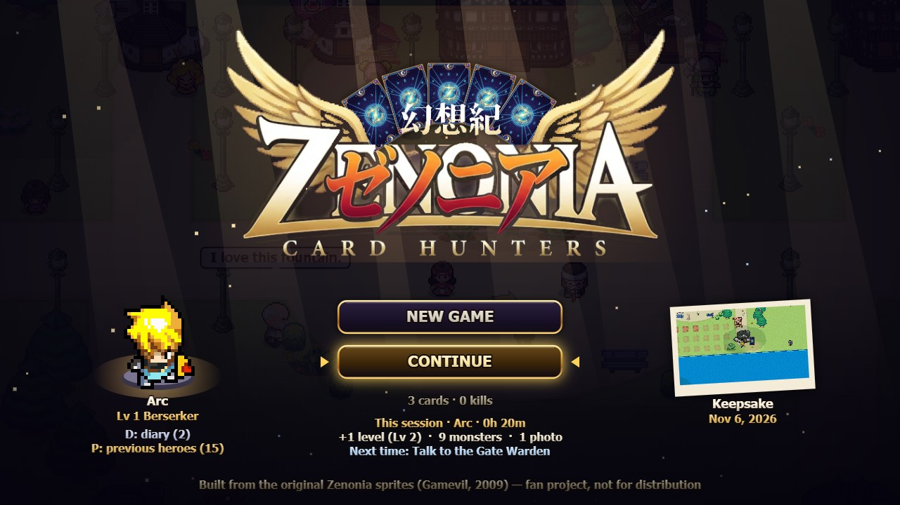
Title screen
CONTINUE picks up your hero, and NEW GAME starts a fresh one. With a save, the title opens on Continue, and the class screen warns you before a new hero replaces yours. After Save & Exit it also shows what you did that session (time, levels, monsters, new cards, gold, any Guardian beaten) and what to do next time. Otherwise it shows a rotating tip. Come back after 3 hours or more and a WELCOME BACK card says how long you were away, your summon coins, any ripe crops, what you did last time (from your diary) and your next story goal. Time away also builds rested EXP (a tenth of a level per hour, up to one level): until it runs out, monsters give double EXP, and a light blue stretch on your EXP bar shows how far it reaches (in a friend's world too). The EXP bar slides up after each kill, and the part you just earned glints white for a moment; your gold and coin chips count up to their new totals and glow warmly when gold or coins come in. A potion or heal brightens the health it gives back on your HP bar, with a mint shine sweeping across it. Casting without enough MP makes your MP bar blink, and a white tick on it marks how much the spell needs; pressing a spell that is still cooling down gives its card on the action bar a little shake, and when the cooldown ends the card brightens and sends out a soft white ring. Every save is also copied to disk, so if the browser ever loses it, the game puts it back at start-up and says Save restored from disk. If a New Game or another hero ever replaces yours, the old hero is kept. Once you have photos, one sits on the right as a little polaroid keepsake: a ♥ favourite (a different one each time) or else your newest photo.
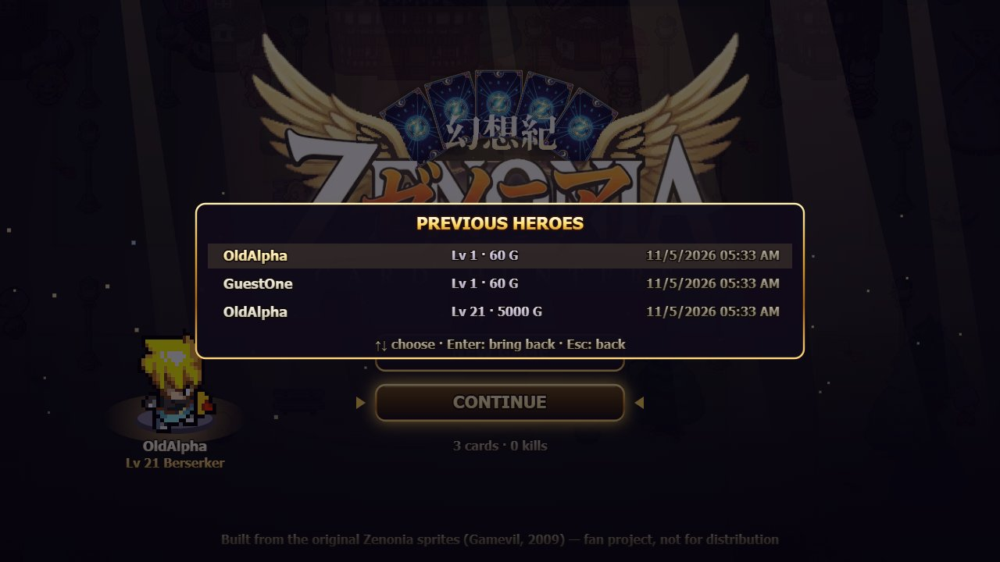
Previous heroes
When an older hero has been kept, the title shows P: previous heroes (on the left, under your hero and D: diary). Pick one and press Enter twice to bring them back; the hero you have now is kept too, so nothing is lost either way.
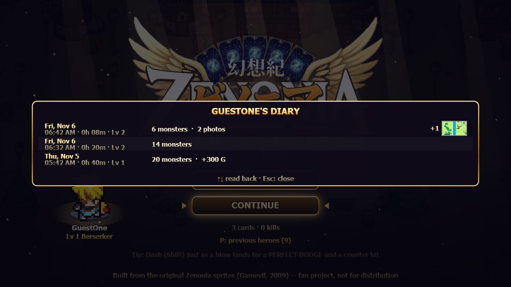
Diary
Every session that ends with a recap (Save & Exit, Sleep for the night, any other way back to the title, or just closing the game while in the world) is written into your hero's diary: the date and time, how long you played, your level, and what you did, from Guardians and levels to monsters, cards, gold and photos. On the title, D (or a click on D: diary under your hero) opens it, newest first. Use ↑ ↓ to read back and Esc to close. A session with photos shows its first one small at the end of its row (with +N for more). It keeps your last 60 sessions.
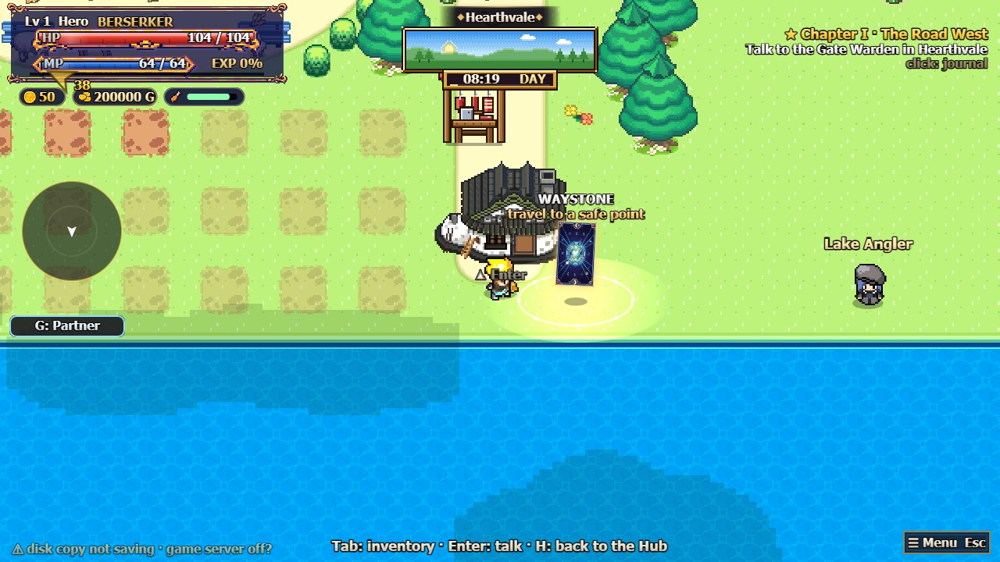
Is my hero saved?
The first time your save reaches its disk copy each session, a quiet green ✓ saved shows for a moment in the bottom-left corner (then at most once every 5 minutes). If the disk copy stops working, usually because the game server was closed, a small amber note, disk copy not saving, stays in that corner until it works again, then ✓ disk copy back shows once. Your browser save keeps working the whole time.
new Online backup (on the website and in the phone app): your hero is also kept on the game server, at most every 5 minutes as you play and at once on Save & Exit, so a cleared browser or a lost phone no longer loses them. Esc ▸ SETTINGS ▸ ONLINE BACKUP shows your backup code (16 letters, like ABCD-EFGH-JKLM-NPQR): write it down or copy it. On a new device, type that code there to bring the hero back (the hero already on that device is kept as a local backup first). Anyone with the code can load the hero, so keep it to yourself. A backup is kept 180 days after the last one.
new Found a bug or have an idea? Esc ▸ SETTINGS ▸ FEEDBACK opens the community Discord and copies a short line about your game (its version, website / app / PC, your class and level, the screen size) so you can paste it into your message.
On the website and in the app, the game tells the game server once each time it starts that a device is playing, using a random number made on that device, so the makers can see how many people play each day. Nothing about you or your hero is sent with it.
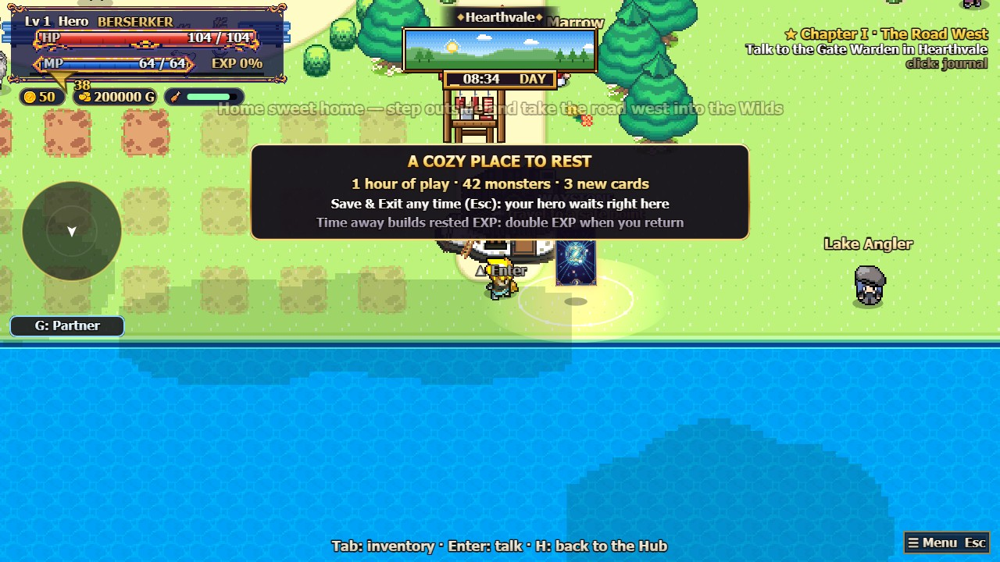
A cozy place to rest
After an hour of play, the next quiet moment (no monster close by, no menu open) brings one soft card: how long you have played, what you did, and a reminder that sleeping in your bed or saving builds rested EXP for next time. Late at night by your own clock (11 pm to 4 am) it comes after just 20 minutes, as IT'S GETTING LATE. It shows once per session, never in a fight, and nothing stops: just keep playing if you like. It follows Esc ▸ SETTINGS ▸ TIPS.
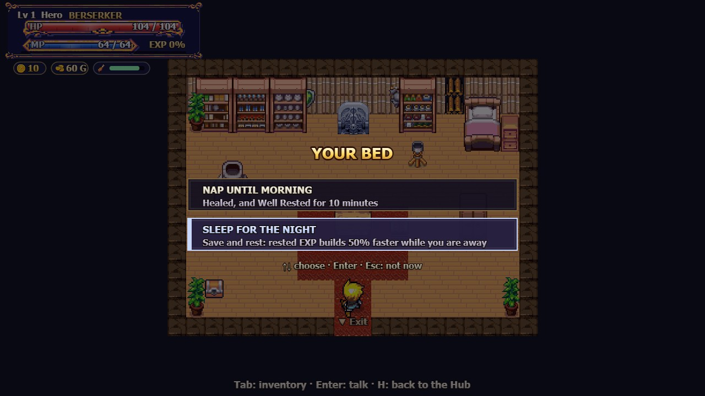
Your bed
Press Enter at your bed at home and choose: Nap until morning heals you and gives Well Rested for 10 minutes, as before. Sleep for the night ends the session the cozy way: a GOOD NIGHT screen, the game saves and goes to the title, and while you are away your rested EXP builds 50% faster. The Welcome Back card says so when you return. Esc steps back.
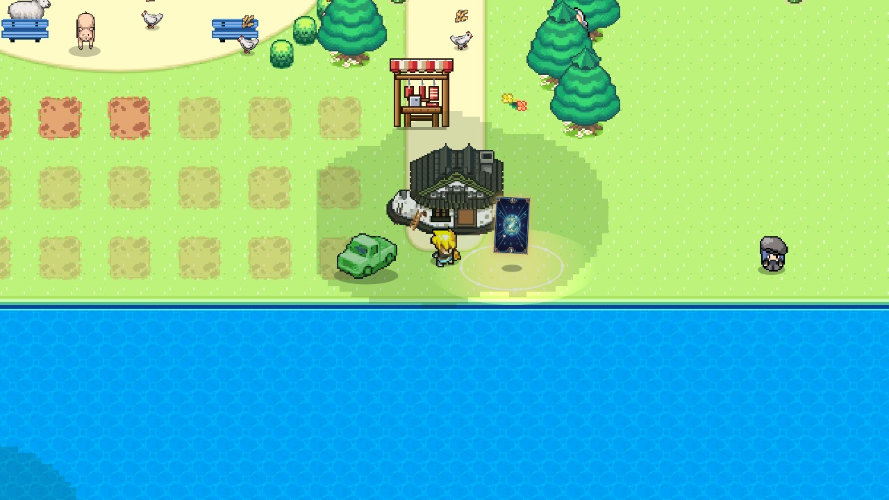
Photos
Press F2 anywhere in the world to keep a picture of it: just the world, its light and weather, with no HUD, menus or writing of any kind (no name tags, labels or prompts). A soft flash and a little two-note chime say it was taken, and the picture goes into the game folder's photos folder (the toast names the file). Playing on another device, or before the game server has been restarted for this, the browser downloads it instead.
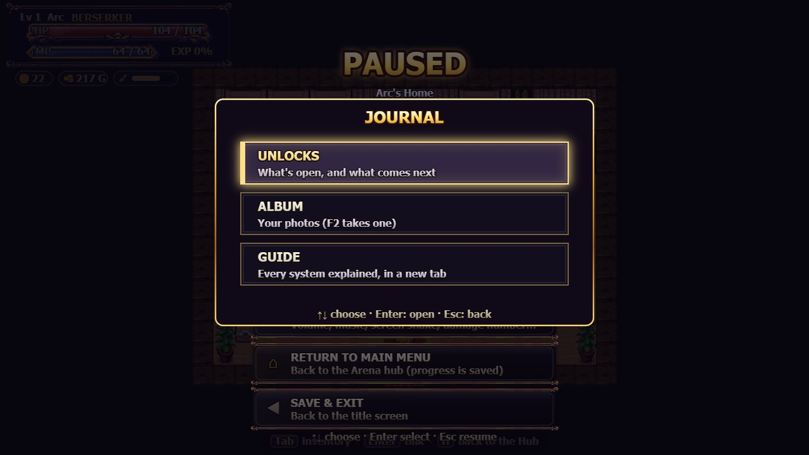
Journal
Esc ▸ JOURNAL holds three things in one place: Unlocks (what is open and what comes next), your photo Album, and this Guide (in a new tab). Closing Unlocks or the Album brings you back to the Journal; Esc there goes back to the pause menu.
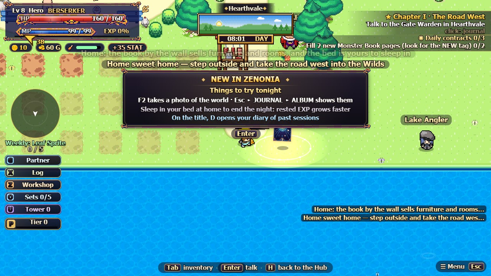
New in Zenonia
When new things arrive, a hero who has already played a while gets one card about them the next time they step out into the open: NEW IN ZENONIA · Things to try tonight, shown once for about 12 seconds. A brand-new hero skips it and meets each thing as they go. While any story card is up, tips and area banners wait, so nothing slides over it.
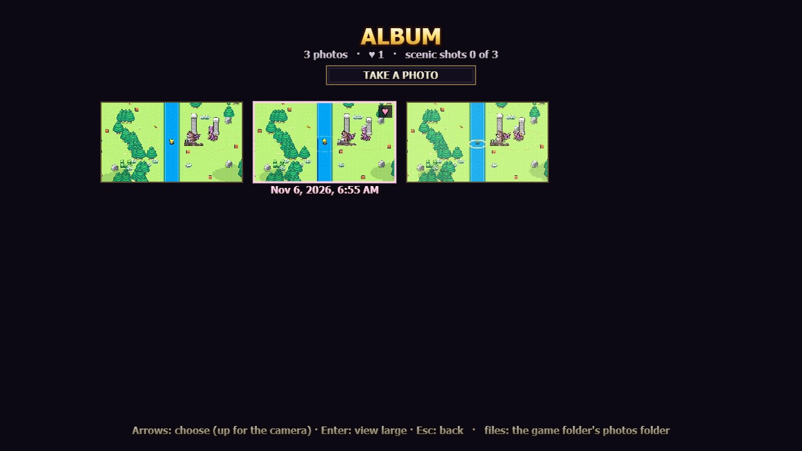
Album
Esc ▸ JOURNAL ▸ ALBUM shows your photos, newest first, twelve at a time. TAKE A PHOTO at the top (press up, or tap it) closes the menu and takes one, so touch and gamepad players can take photos too. Use the arrows to choose, Enter to see one large (← → flip through them there, and ↑ puts a ♥ on a favourite or takes it off) and Esc to go back. Favourites show their heart on the grid, the header counts them, and the diary shows a favourite first for its session. Toasts wait until you close it. The pictures themselves are in the game folder's photos folder.
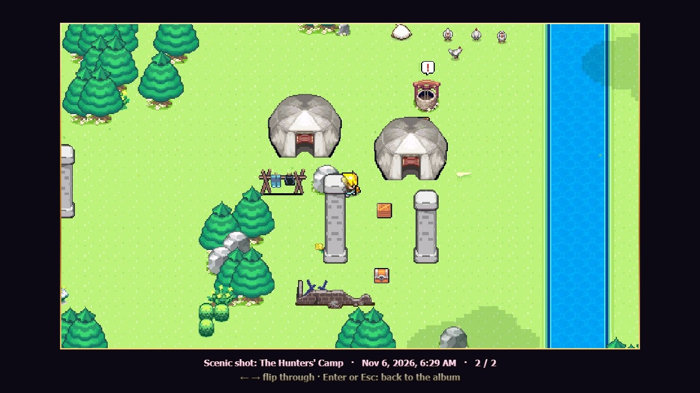
Scenic shots
Take a photo with a landmark well inside the picture (Windmill Hill, the Great Oak, the Hunters' Camp and the rest) and it counts as a scenic shot: once per landmark, for a little EXP and +1 summon coin. The album shows how many you have in the area, and a scenic shot's large view names its landmark. Photos you take also appear in the session recap on the title and on the wind-down card. The first landmark you discover reminds you once (follows the Tips setting).
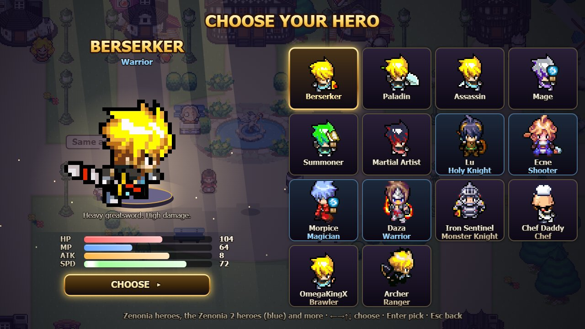
Choose a class
Nine heroes to choose from, and each fights differently: swords, daggers, magic or summons. Your class decides your basic attack combo and how your stats grow. A hero you already play keeps their class even if it is no longer on the list. new Some say an Assassin with just the right name is not an Assassin at all…
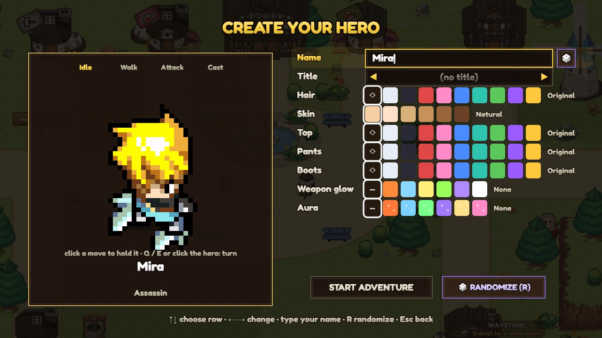
Create your hero
Name your hero (or click the 🎲 at the end of the Name row for a name to start from) and choose a title, weapon glow and aura, then colour your class's own hero part by part. new A new hero always starts in their class's own body and head; there is no Body or Head row when you make one. At the Stylist (or the MIRROR) a hero you already have can still pick a Body and a Head from the game's full heroes (Berserker, Paladin, Assassin, Lu, Ecne, Morpice, Daza, Chef Daddy), and a hero who already wore a different body or head keeps it. The colour rows: Hair, Skin, Top, Pants and Boots on the three Zenonia heroes; Hair, Skin, Outfit and Accent on Lu, Ecne, Morpice and Daza (Daza's silver mask is his Trim); Hair, Skin, Top, Pants, Accent and Hat on Chef Daddy. Each part keeps its shading in the new colour, so dark hair can turn blond, and a borrowed head takes your hair colour too. Every hero body has every move, so any mix walks, attacks and casts properly; the preview shows Idle, Walk, Attack and Cast in turn. The Body and Head rows show a tiny picture of who you picked, and while you are on a part's row that part glints now and then in the preview, so you can see what it changes. (class look) is your class's own hero, coloured the same way. (A villager or monster costume picked before stays as it was, with its old colour rows.) R randomizes the whole look. You can change it any time at the Stylist in town, or anywhere with Esc ▸ MIRROR (no monster close by). After a change your partner gives you a little heart, and the next few town folk you chat with will notice it.
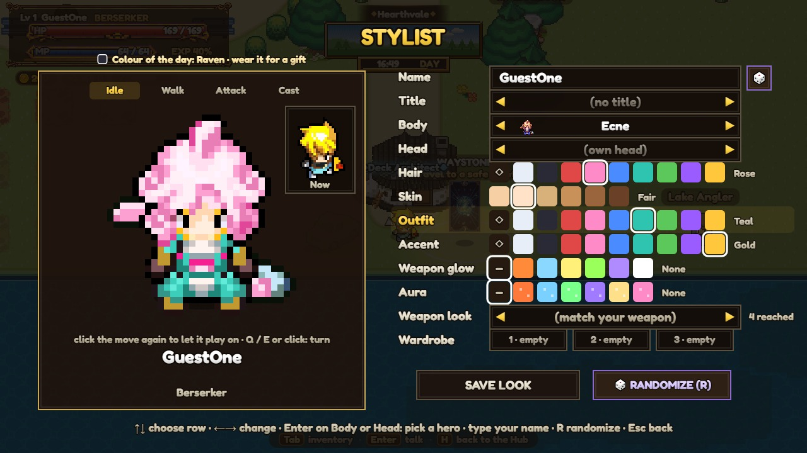
Colour by part
In the Stylist each part of your hero has its own row of colours: pick Rose hair, Fair skin, a Teal outfit and Gold trim, and every move keeps it. While a part's row is chosen, that part glints in the preview.
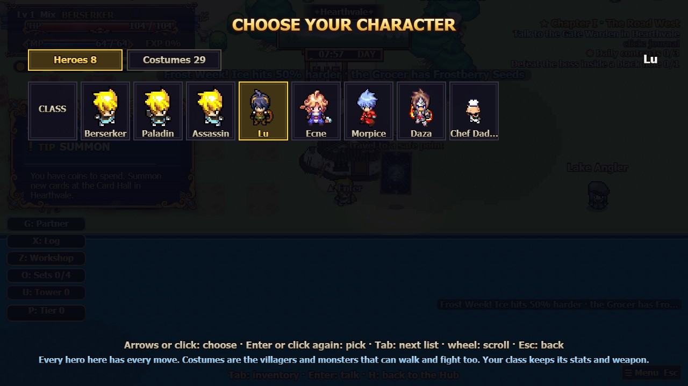
Heroes and costumes
At the Stylist, Enter on Body or Head opens the picker; whoever you point at walks in their square, turning through every facing, so you can see how they move. Heroes are the full hero bodies, each named. Costumes are the villagers and monsters that can really be played: their own walk in four directions and their own attack. The rest were left out because they only slid about. A hero already wearing one keeps it. Your class keeps its stats and weapon whatever you wear.
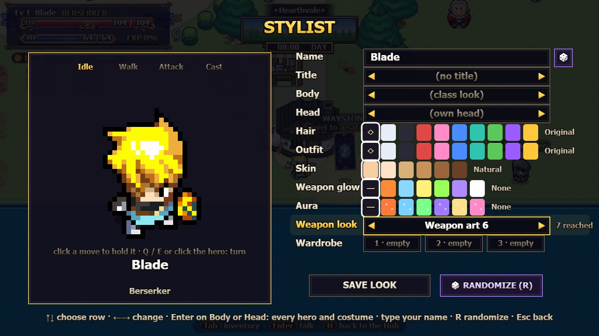
Weapon look
A weapon's picture follows its tier. At the Stylist the Weapon look row lets you keep (match your weapon) or show any weapon art you have reached, up to the best weapon you have ever wielded. It only changes the picture, never the stats. Classes that fight with an orb, tome, fists, a pan or a bow have no row.
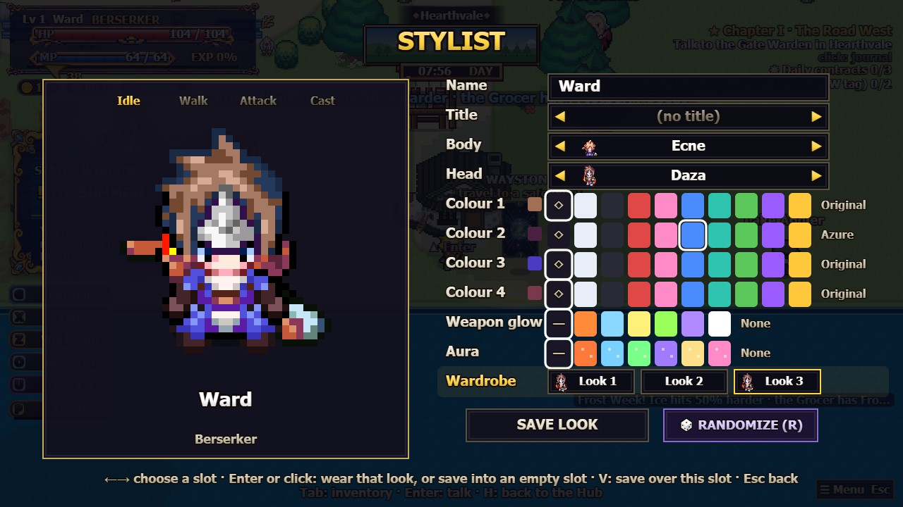
Wardrobe
At the Stylist the Wardrobe row keeps three saved looks. Click an empty slot (or press Enter on it) to save the look you are making; click a saved one to put it back on, then SAVE LOOK to keep it. V saves over the chosen slot. Your name and title stay as they are. Each saved look also remembers your partner's colours, and brings them back when you wear it.
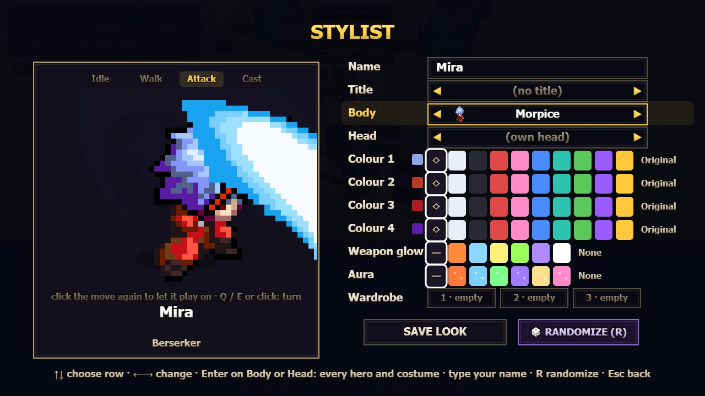
Preview controls
The hero in the creator plays Idle, Walk, Attack and Cast in turn. Click a move's name to hold it there (click it again to let it play on), and click the hero or press Q / E to turn it and see every side.
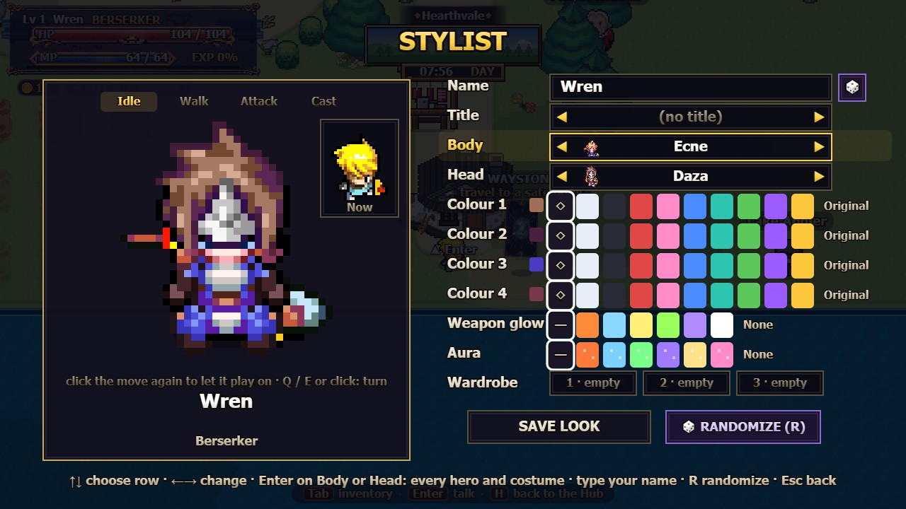
Before and after
At the Stylist, once you change anything about the look, a small Now figure in the corner of the preview shows the look you are wearing today, turning with the big one, so you can compare before you press SAVE LOOK. A new name or title alone does not count.
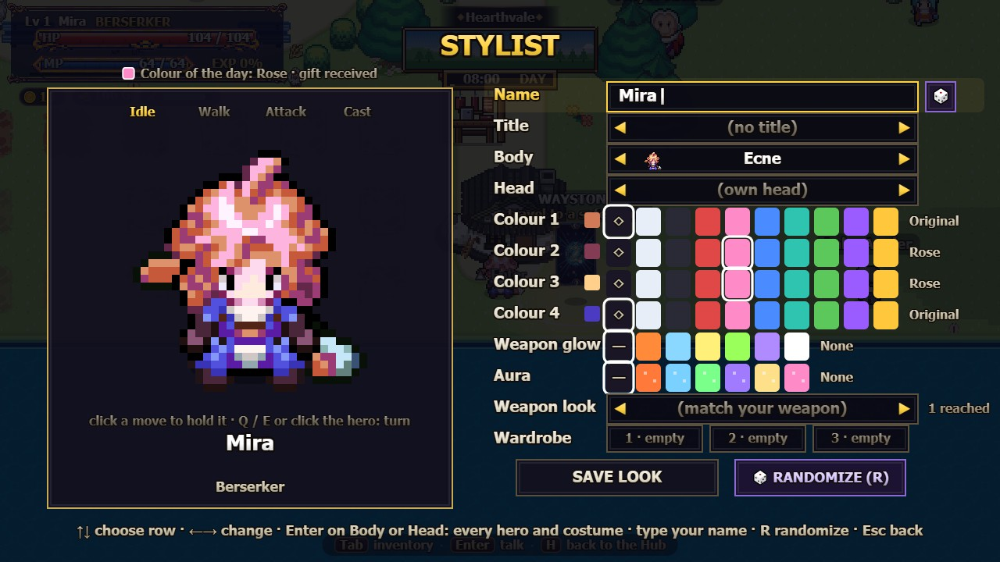
Colour of the day
Each day the Stylist names a colour of the day, shown with its swatch above the preview. Save a look that wears it anywhere (hair, outfit or one of the body's colours) and she gives you a little gift of gold, once a day. The line turns grey once you have had it.
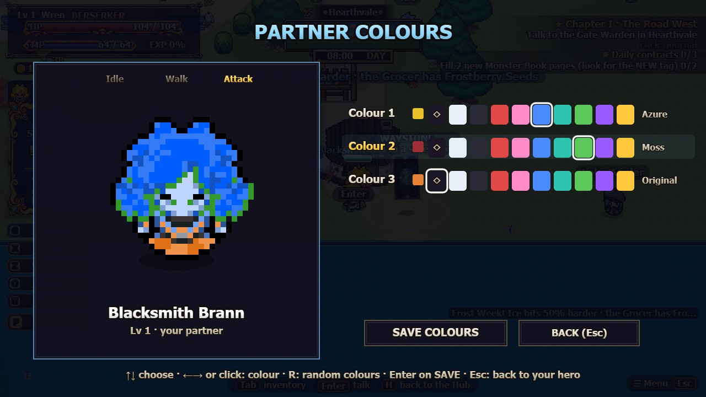
Partner colours
At the Stylist, the Partner button in the corner of the preview (or P) opens your partner's colours: up to four of their own colours with the same swatches as yours, a preview of their idle, walk and attack, and the part each row paints glinting. R rolls random colours. SAVE COLOURS and they step back out in them, and friends playing online with you see them that way too; Esc goes back to your own look.
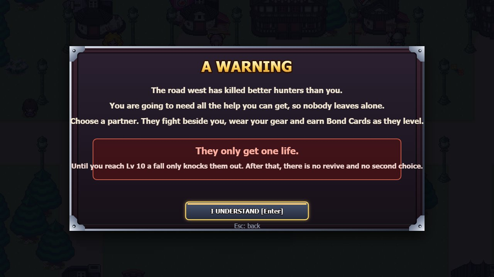
A warning about partners
Your partner fights beside you, wears gear and earns Bond Cards. Until you reach Lv 10 a fall only knocks them out for 30 seconds. After that, a partner who falls is gone for good.
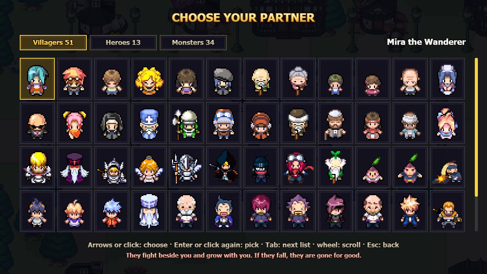
Choose a partner
Pick the companion who will travel with you (the one you point at walks in their square). They level up alongside you and can be managed any time with G. Partners come from two lists, Villagers and Monsters: one with no fighting art of their own leans in with a small lunge when they strike and flinches back when hit.
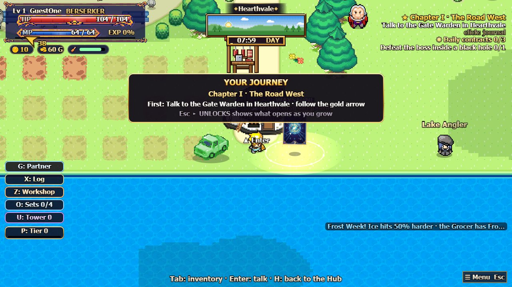
Your first goal
The first time you step out into Hearthvale, a gold-framed YOUR JOURNEY card names the chapter and what to do first (talk to the Gate Warden), then the story tracker at the top right (with the daily contracts and other quests under it, all on a soft dark band so they read over any ground) and its gold arrow take over.
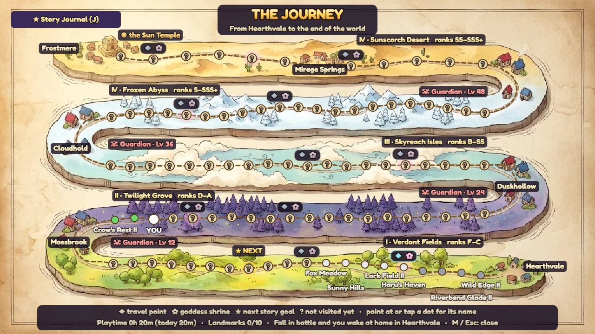
Your first hour: Chapter I
The world keeps you posted calmly: news you did not cause (a chest appeared, an Alpha prowls, Monster Book finds) arrives one message at a time, at least 3 seconds apart, and the same news is not repeated within 3 minutes, while anything you just did answers at once. The story tracker (top right) and its gold arrow lead the way; its title shows which step you are on (for example 3/7). Chapter I, The Road West, goes:
- Talk to the Gate Warden at Hearthvale's west gate.
- Walk west through Verdant Fields to its safe point at the far end; touching it lets the waystone by your door bring you back.
- Find Scout Pell, lost in the fields.
- Defeat 25 monsters, and break the ambush on the old road.
- Go below the road into the Depths and beat the Keeper for the seal key.
- Face Rootcaller, the Guardian, once you are Lv 12 (its ward turns your blade before then). Spend your stat points first: the game reminds you if you walk up with points unspent.
- Cross into Mossbrook and speak to its Elder.
Systems open along the way, one at a time (see Unlocks).
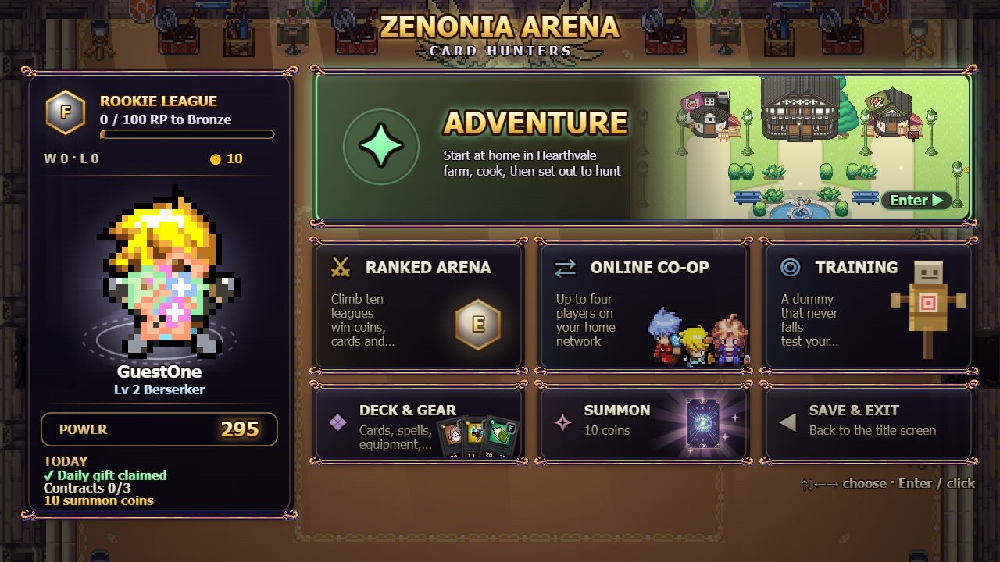
The hub
The Zenonia Arena hub is your main menu. H takes you back here from town. On the left, your player card shows your league and RP, wins and losses, coins, your hero, POWER, and TODAY: what waits right now (the daily gift, contracts, summon coins, rested EXP, the Monster of the Day, your weekly hunt and your partner's gift; with more than three lines it turns pages every few seconds). On the right, ADVENTURE is the big tile on top, with a window onto Hearthvale: its row of houses and the fountain; Ranked Arena, Online Co-op and Training sit in a row under it, and Deck & Gear, Summon and Save & Exit along the bottom. Each tile has a little picture of its own (the next league's emblem, friends side by side, the straw dummy, a fan of your best cards, a card back floating in turning rays of light, with a sheen sliding across it and sparkles around it) inside gold-cornered frames. Modes you have not opened yet show the level they open at. Move with the arrow keys (left and right along a row), then Enter or click. News lines show along the foot of the screen here, clear of the menu. On an adventure, Esc opens the pause menu in the same gold-framed style: Resume, Inventory, Unlocks, Settings, Guide, Album, back to the hub, or Save & Exit (news lines wait in the log while it is open).
- Ranked Arena
- Online Co-op
- Training
- Adventure
- Deck & Gear
- Summon
- Save & Exit
Controls
Keyboard first, with mouse clicks on most buttons. The fight keys can be changed in Esc → SETTINGS → CONTROLS. Some keys only work once that system is unlocked (see Unlocks).
| Fighting | |
|---|---|
| WASD / arrows | Move |
| J or F | Attack (a 3-hit combo; the third hit launches) |
| Q E R (or 1–3) | Cast the spell cards on your bar |
| C / 4 | Fusion card / pick cards to layer |
| Shift or K | Dash (with invincibility frames) |
| L (hold) | Block; tap attack while blocking to Shield Bash |
| V / Space | Layer: transcend, or layer your picked cards |
| 5–8 | Use an item from your belt (potions; a new hero starts with three small HP potions) |
| Screens | |
|---|---|
| Tab / I | Inventory (deck, cards, stats, Layer, titles, Ki, bag) |
| Esc | Pause menu (JOURNAL holds the Unlocks list, your photo Album and this Guide; also Settings) |
| F2 | Take a photo of the world (no HUD), saved to the photos folder |
| M | Journey map |
| B | Meal time (eat to stay fed) |
| G / N | Partner / pets |
| X / Y | Game log / titles |
| Z / O / U / P | Workshop / card sets / Abyss Tower / season |
| - | Monster Book |
| Enter | Talk, open, gather, use |
| H · 0 | Back to the hub · mute sound |
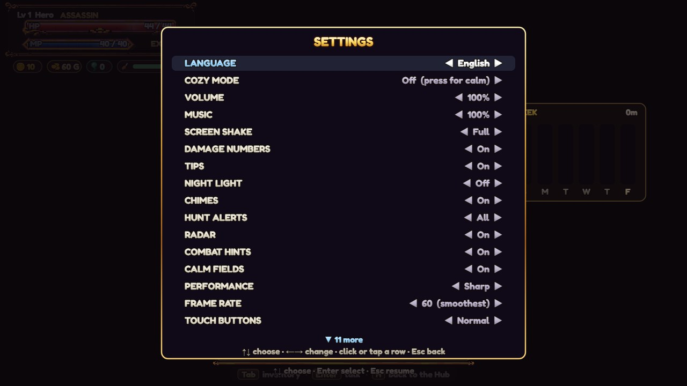
Settings
Esc → SETTINGS. Your choices are kept in your browser. The list scrolls (a small ▲ / ▼ says how many rows are above or below), and you can click or tap a row to choose it, then again to change it.
- Language new (top row): English is the default. Auto follows your device's language, and you can also pick Español, Português, Français, Deutsch, Filipino or 日本語 (Japanese). Menus, buttons, messages, tips and what people say switch at once. The translations are built into the game, so they work offline and in the phone app. Made-up names (monsters, heroes, places) stay as they are, and any line the dictionary doesn't have yet stays in English.
- Cozy mode (top row): one press for a calm bedtime game: no screen shake, quiet hunt alerts, a low night light and softer music. Press again and your own settings come back.
- Volume: everything you hear (0 still mutes it all).
- Music: how loud the music is beside the sound effects.
- Screen shake: full, half or off.
- Damage numbers: on or off; words like PARRY! still show. Quick hits on the same foe add up into one number that grows a little, so a flurry stays readable.
- Tips: the tip windows, on or off.
- Calm fields: monsters far below your level leave you alone unless you hit them, on or off (cozy mode turns it on). In online co-op the host's choice counts.
- Combat hints: the aim corners under the foe your spell will hit and the little reaction and weak point chips on your spell slots the timer lines under foe debuff chips and the gold last-stretch outline and the combo timer line, on or off. The chips over foes and the spell warning ! always show.
- Touch buttons: small, normal or large touch controls, changed at once.
- Vibration: buzzes on phones and tablets, on or off.
- Night light: a warmer, dimmer screen for playing late, off, low or high.
- Chimes: the soft music-box chimes under hunting alerts and combat moments (reactions, Payback, Flawless, Rally), on or off.
- Hunt alerts: All, or Quiet (no "elite nearby", "new for your Monster Book" or "target is near" messages; rewards still show).
- Radar: the little map of what's near, on or off.
- Send hero / Get hero: move a hero to another device with a short code (how).
- Performance: SHARP (the default) or FAST, which draws a quarter of the pixels and may help on older phones; it applies the next time the game loads.
- Controls: change the keys for attack, dash, block, Layer and the three spells (keys that move you or open a screen can't be taken).
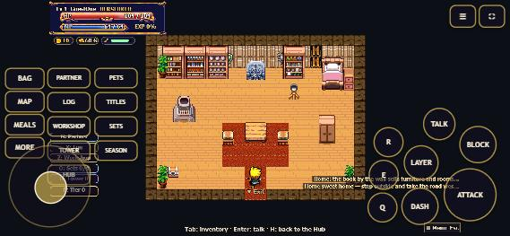
Phones and tablets
Play on the game's website in your phone's browser, or install the Android app from the website. (Running the game on your own PC instead? Open it on a phone on the same Wi-Fi; the address is shown under Online Co-op's HOST CODE.) Touch controls appear at the first tap; hold the device sideways. new When a newer Android app is out, the app's title screen shows a small New version ready card in the top-right corner: DOWNLOAD opens the new app in your phone's browser (install it over the old one; your hero stays), Later hides it until an even newer one comes out. The website always plays the newest version by itself.
new The app updates itself: from this version on, when the app starts online and the website has a newer game, it plays that one straight away, no new download needed. Offline it plays the copy built into the app. Your hero stays on the phone either way. A new download (the card above) is only needed for changes to the app itself.
- Left: a joystick to move (it also moves the choice in menus), plus BAG, MAP, MEALS and MORE (partner, pets, log, titles, workshop, sets, tower, season, hub).
- Right: ATTACK, DASH, BLOCK, LAYER, the three spells and TALK.
- In menus: OK and BACK, and tapping the screen clicks.
- Each device keeps its own save; it never overwrites the computer's. To move a hero to another device: on the old one, Esc → SETTINGS → SEND HERO shows a 5-letter code (good for 30 minutes); on the new one, SETTINGS → GET HERO and type it. You're asked first, and the hero it replaces goes to the archive (title → previous heroes).
- Auto-pause: switch apps, lock the screen or change tab and the game saves; playing alone, it pauses too (in co-op it keeps going for your friends).
- Add to Home Screen from the browser menu to play it like an app: full screen and sideways, with its own icon.
- A light buzz when you're hit, firmer for a parry or perfect dodge (turn it off with VIBRATION in Settings). On tablets the buttons are bigger, and Settings → TOUCH BUTTONS makes them smaller or larger.
In town and indoors there is nothing to fight, so the phone shows one big TALK button where ATTACK usually is (and DASH). Out in the Wilds, caves and the dojo, ATTACK, the spells, BLOCK and LAYER come back, with TALK beside them.
Under MORE, a button only shows once that feature has opened for your hero (the Log and Titles at level 5, for example).
Typing on a phone: when the game wants letters (your hero's name, or a room code for Online Co-op), your phone's keyboard comes up. If it doesn't, tap the game or the ⌨ Keyboard button at the top. Letters, delete and Done all work, and a keyboard plugged into a tablet still works too.
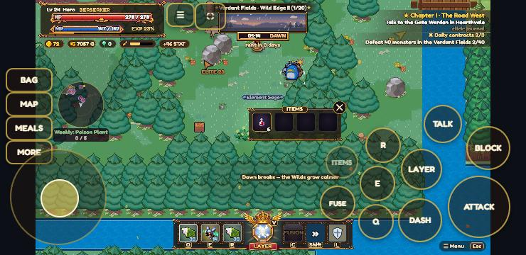
Move or hide the item belt new
Drag the item belt anywhere: press on its plate and slide (finger or mouse). A quick tap on a socket still uses that potion, and a drag never does. The spot is remembered on this device (the phone layout and the mouse layout each keep their own) and always stays on screen. A double tap on its ITEMS tab sends it back to its usual spot.
The little × on its top right corner hides it; 5–8 and P still use items while it is hidden. To bring it back, tap the round ITEMS button just left of Q/E/R on a phone, or the small flask button left of the skill bar with a mouse. If its spot was ever lost off the screen it comes back home.
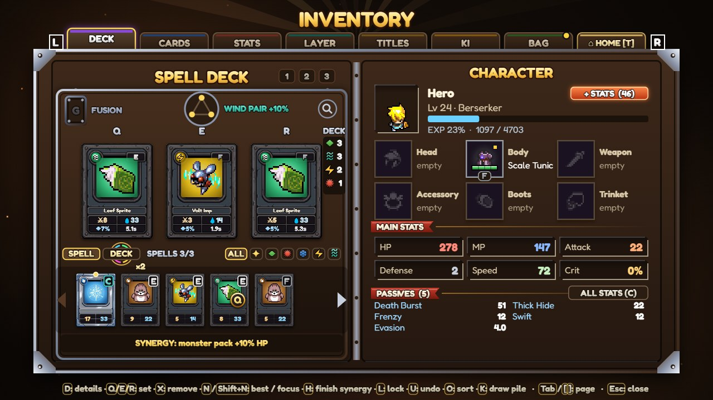
Every key on a phone new
On a touch screen every key named in a hint line is a button: the keys get a faint gold outline, and a tap presses that key (D details, O sort, L lock, Q/E/R set…), in the bag, the shops and every other screen. Also on phones: ☰ and ⛶ move to the screen's top-left corner in menus (they sat on the bag's tabs); the orange crystals behind the bag are gone; the left-side pills hide (MORE opens them all); the radar sits on the left, just right of the BAG, MAP, MEALS and MORE buttons, with the item belt beside it (tap a socket to use that potion), so the buttons, the radar and the belt never cover each other; the pickup feed moves clear of ATTACK; and the joystick hides while someone is talking to you.
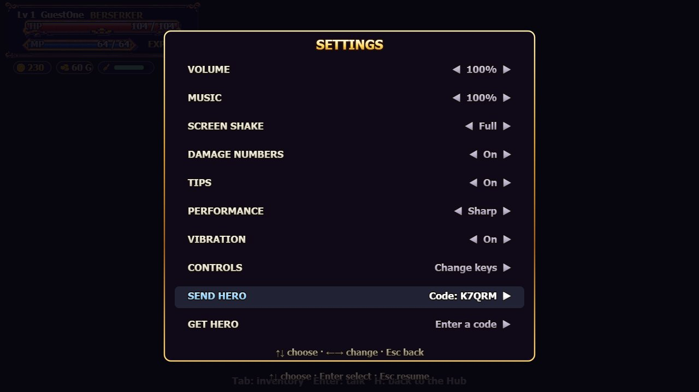
Move your hero to another device
Each device keeps its own save, so a hero on your PC isn't on your phone until you send it. Both devices must use the same game server: the website and the Android app already share one, so this works from anywhere.
- On the device that has the hero: Esc → SETTINGS → SEND HERO. A 5-letter code appears (the picture shows an example). It works for 30 minutes, once.
- On the other device: start or continue any hero, then Esc → SETTINGS → GET HERO, and type the code (capitals or not).
- The game shows both heroes and asks before swapping. Say yes and the game reloads with your hero; say no and nothing changes (the code still works).
The hero it replaces isn't lost: it goes to that device's archive, and the title's previous heroes can bring it back. A friend in your co-op room can't send or get a hero until they leave the room.
Controllers gamepad
Plug in or pair any standard controller (Xbox, PlayStation, Switch Pro and most others) and press a button; the game says when it's ready.
| Left stick / D-pad | Move · choose in menus |
| A · B | Attack · Dash (OK · Back in menus) |
| X · Y | Talk · Layer (X: card view in the Monster Book) |
| LB · RB · RT | Spells 1 · 2 · 3 (LB · RB switch tabs in menus) |
| LT (hold) | Block |
| START · SELECT | Pause · Bag |
| Stick clicks | Map (left) · Meals (right) |
Combat
Fast, close-range action. Chain your combo, weave in spells, and read your enemies: blocking, parrying and dodging at the right moment turns fights around.
New in combat
Recent additions, each with its own card further down:
- Payback after a perfect parry, element reactions (Thaw, Steam, Overload, Wildfire, Shatter, Blight, Miasma, Magma), weak points and resistances. Lower-rank cards now have a small chance each cast to leave their element's status, so reactions happen early on.
- Card chains: cast cards close together; the first one's element sticks so the next reacts, and they hit harder, with a finisher on the third.
- Hints: the aim mark, reaction and weak-point chips on your spell slots (badges on phones), status timers under foe debuffs, the gold last stretch outline and the combo timer line.
- Foes: a spell warning ! before ordinary monsters cast, taking turns (only three fight you up close), and calm fields: monsters far below you leave you alone (a soft ♪).
- Rewards and comfort: Flawless fights, catch your breath between fights, loot drifting to you afterwards, Rally when a hit drops you low, merged damage numbers, soft chimes, and the Unscathed and Element Sage titles.
- Practice: the Reactions drill at the training dummy. Settings has Combat hints and Calm fields switches. Online friends get all of it too.
Attacks and combos
Your basic attack is a three-hit combo; the last hit launches enemies into the air. Floating numbers show damage, crits and status effects.
- Kills give EXP, gold and card drops.
- Poise: after three quick flinches you steady yourself, so a crowd can't stun-lock you.
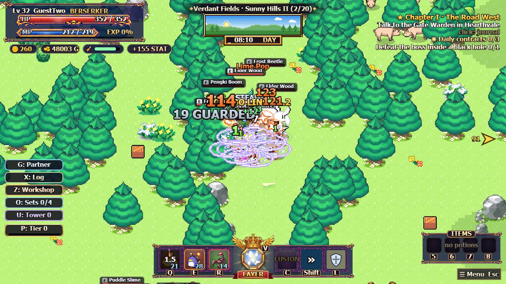
Spell cards
Three cards from your deck sit on Q E R. Each casts its monster's spell and has its own cooldown and MP cost. Casts glow in your Layer's colour.
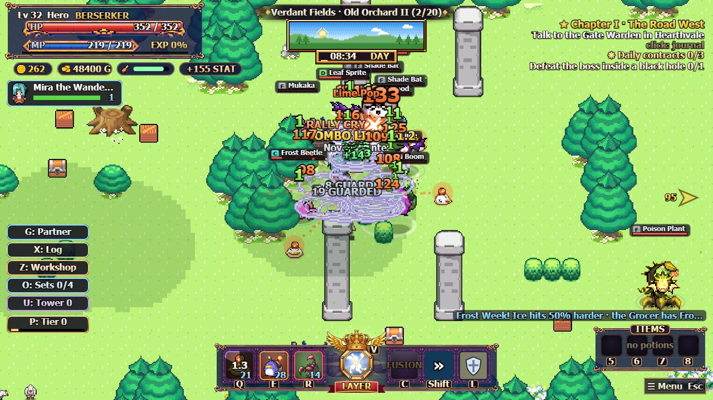
Block, parry and Shield Bash
Hold L to raise a bubble that guards from every side: it soaks most of a blow and deflects spells.
- Perfect parry: block just as a hit lands to reflect it and stun the attacker.
- Guard stamina: blocking drains a bar; at zero your guard breaks.
- Shield Bash: attack while blocking to shove foes back.
- Layer skills add Wide Parry, Iron Bubble and Shield Burst.
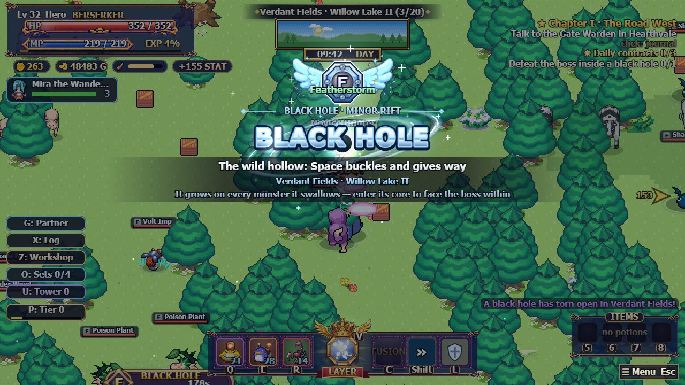
Dash and perfect dodge
Dash with Shift; it has invincibility frames and breaks combos, and is ready again after 2 seconds (the dash button shows the wait). Dash just as a blow lands for a perfect dodge: your dash is ready again at once and your next hit is a COUNTER for 60% more damage.
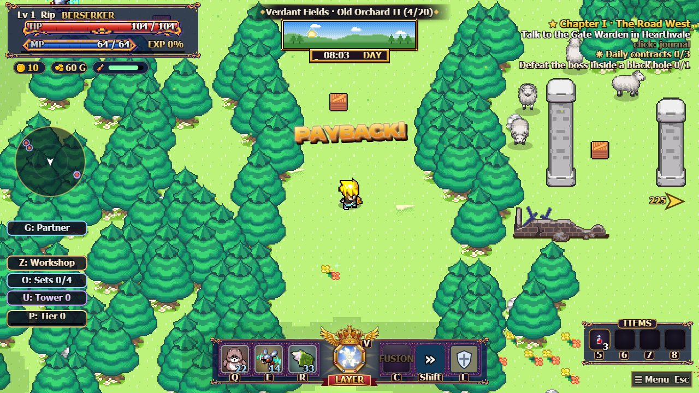
Payback
After a perfect dodge or a perfect parry, press attack in the counter window for your class's PAYBACK! (while still guarding, it replaces the Shield Bash): swords lunge into a launching cleave, fists throw a four-blow flurry, bows fan three piercing arrows, mages blink back and leave a blast, and summoners loose a shockwave all around.
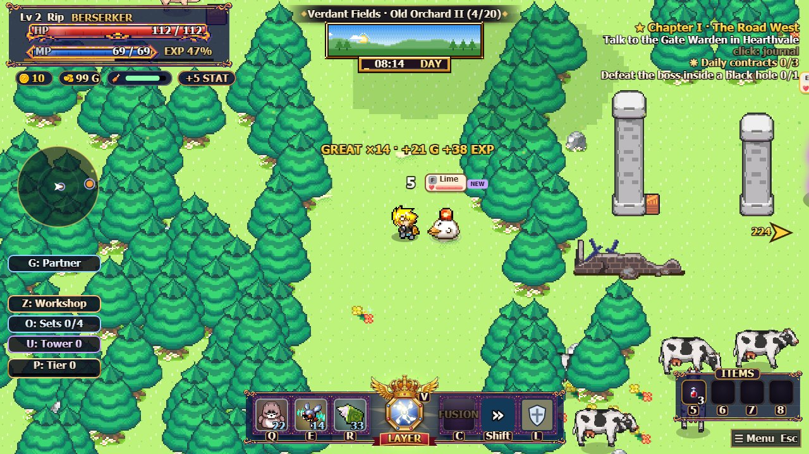
Combo bonus
Keep hitting a reeling foe and the hit counter climbs: GOOD at 5, GREAT at 10, AWESOME at 20, ZENONIA!! at 40. When a chain of 5 or more ends you get gold and EXP for every hit, and the higher the grade, the bigger the bonus (up to ×4). A thin gold line under the HITS counter shrinks as your time to land the next hit runs out; each hit fills it again.
Skills turn to the foe new
Beams, ground quakes and dashes go the way you face, so you can aim them, but after you walked away from a monster they fired into empty ground. Now, when the nearest foe is not in front of you, your hero turns to it before the skill goes off. Every damage card was tested against field monsters: all of them land within their own reach (short bursts like "a tight blast right beside you" only reach close foes; food, healing and MP cards help you instead of hitting).
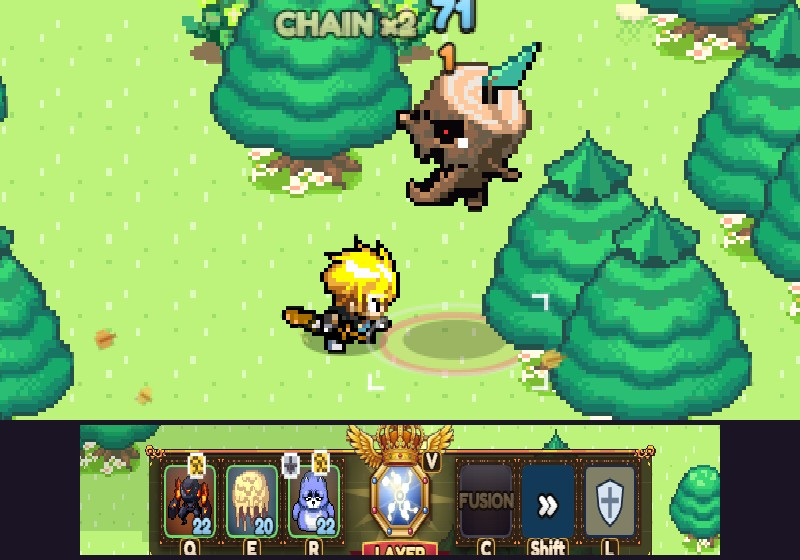
Card chains
Cast your cards in a rhythm. A second card within about 2.5 seconds of the first chains: the first card's element is sure to stick to every foe it hit, so the second can react with it (fire then ice is a sure Steam, ice then earth a sure Shatter), and the second card hits 25% harder. A third card in time finishes the chain: 50% harder and 30% of its MP back. Chaining a card of the same element as the one before adds Resonance: 15% more on top, so one-element decks chain well too. Melee hits keep the chain going, so attack, card, attack, card flows. While a chain is open, a small gold link chip sits on your other ready spell slots (a gold ∞ badge on phone buttons), and a quiet CHAIN ×2 or CHAIN FINISH! shows over you. Practise at the training dummy's CHAINS drill (its panel counts your finishes), and finish 100 chains for the Chain Weaver title.
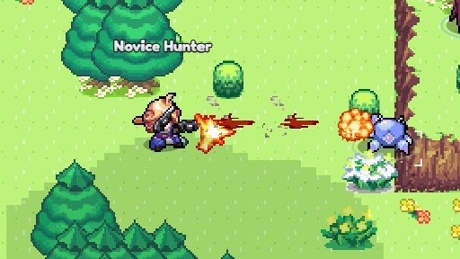
Ecne's gun
Ecne, the Zenonia 2 Shooter, fires her own shells from her Zenonia 2 art: each of the first two attacks sends a red shell trailing smoke that bursts in a small fireball on a hit, and the third launches a rocket that blows up on the first foe it meets (or at the end of its flight), hurting and lifting foes around it. Her muzzle flashes are her own frames too. Damage is the same as before.
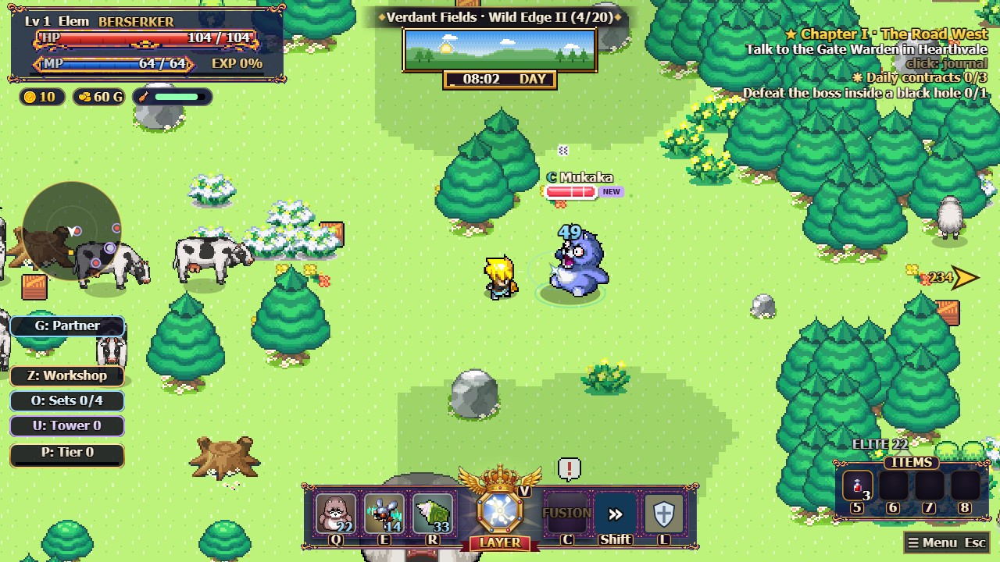
Element reactions
Elements mix, and a tiny pixel chip over the foe shows it, white-bordered like the freeze and burn chips by its health bar. Fire on a frozen foe thaws it for half again as much damage (a blue drip); ice on a burning foe makes steam, putting the fire out and stunning it a moment (white wisps); lightning on a burning foe sparks the foes right beside it (a yellow spark burst); and wind on a burning foe spreads the flames (an orange flame). Statuses come from spells: an S+ card always leaves its element's status, and lower cards now have a small chance each cast (20% at F, up to 35% just below S+) for burn, freeze, shock, crack and poison.
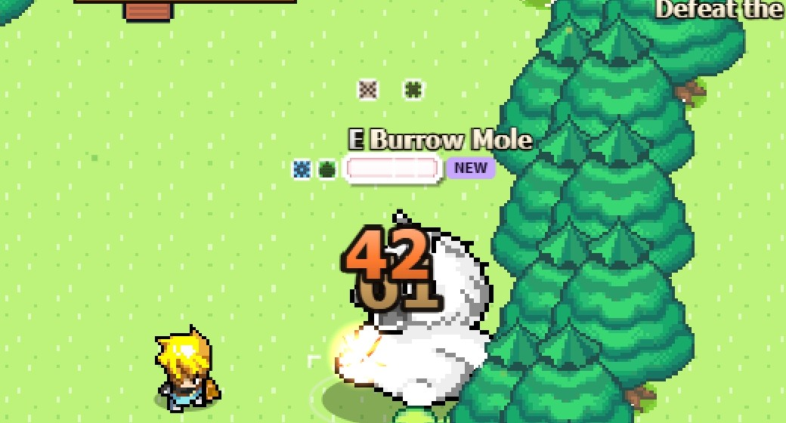
Shatter and Blight
Two more reactions. Shatter: earth on a frozen foe breaks the ice for 60% more damage (tan shards chip). Blight: fire on a poisoned foe makes the rest of the poison land at once, in one hit (green bubble chip). The spell slot hint shows both. Miasma: wind on a poisoned foe (not burning) blows the poison onto the foes around it (green wisp chip). Magma: fire on a cracked foe (earth cracks armour) fills the cracks with fire: the crack ends and it burns for 5 seconds at double heat (orange cracks chip).
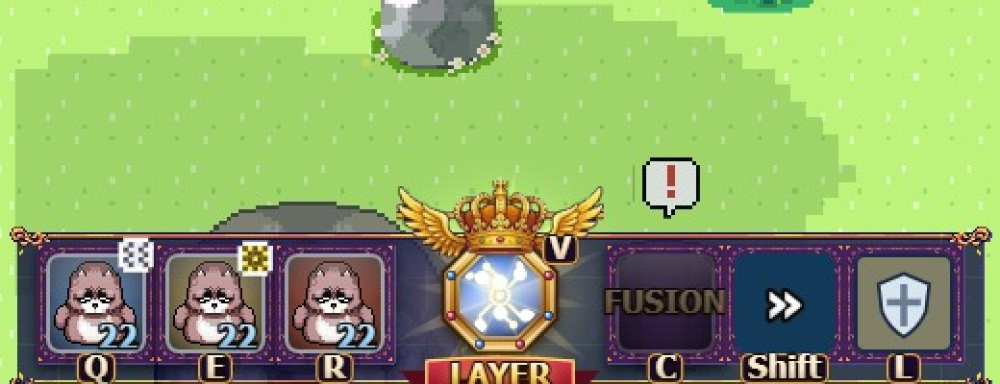
Reaction hint
When a foe near you is burning, frozen or poisoned, every ready spell that would set off a reaction shows that reaction's little chip in the corner of its slot. Here the foe burns: the ice spell on Q would make Steam and the lightning spell on E an Overload. No words, it just bobs gently until you cast or the foe moves away.
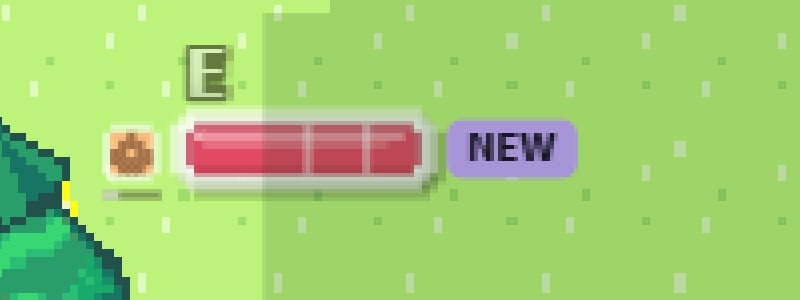
Status timers
Each debuff chip next to a foe's health bar (burning, frozen, poisoned and so on) has a thin white line under it that shrinks as the effect wears off. When the line is nearly gone, it is your last moment to set off a reaction, like Thaw on a freeze. Settings > Combat hints hides the lines.
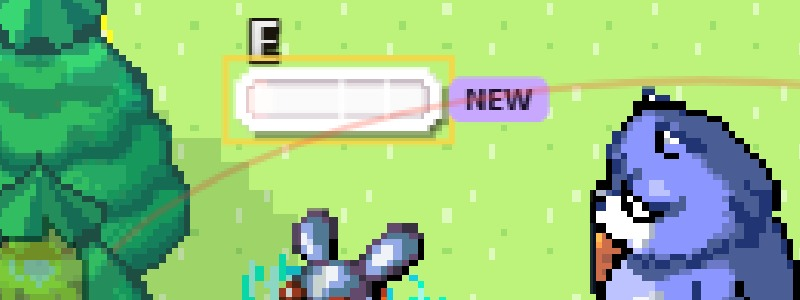
Last stretch
A monster down to its last 20% of HP gets a soft gold outline round its health bar that slowly breathes, so in a crowd you can see which one a single hit will finish. Not on bosses or your own familiars. Settings > Combat hints hides it.
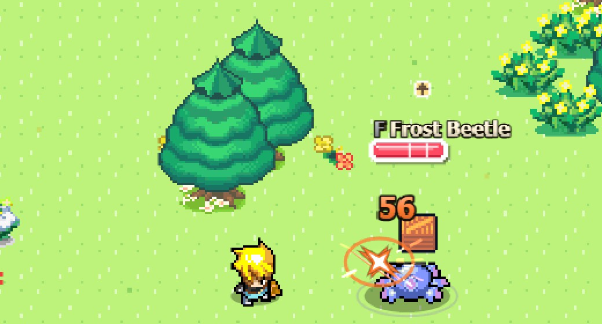
Weak points
Every monster has an element (its Monster Book page says it, and what it is weak to). Hitting it with that element does +25%, and a tiny yellow arrow chip pops over it, here a fire hit on a Frost Beetle. Fire and ice are weak to each other, earth to wind, wind to lightning, lightning to earth, dark and holy to each other, and poison to fire. A spell slot wears the arrow in its top-left corner while a foe near you is weak to it. Monsters also resist their own element: a hit of it does 25% less and shows a small grey down arrow. Your spell slots wear the same arrows when the foes near you are weak to, or all resist, that spell. On a phone or tablet the spell buttons wear a small badge for the same hints: ▲ weak, ▼ resisted, ✦ a reaction is ready.
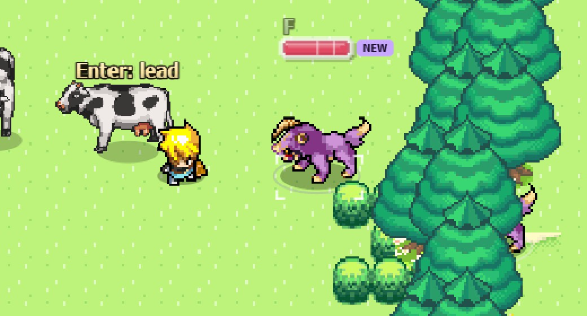
Aim mark
Your spells turn to face the nearest foe within reach. That foe wears four small white corners at its feet while one of your spells is ready, so you can see who the next spell will hit. The mark slides to a new foe as you move and fades away when every spell is cooling down.
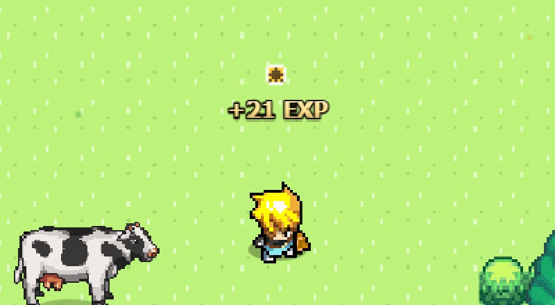
Flawless
Win a fight of 3 or more monsters without losing any HP to a hit, and once the area is quiet for two seconds you get a quarter of their EXP again. A small gold star chip pops over your hero with the EXP. Hunger and the like do not spoil it, only hits. With online friends, each hero earns it on their own: a kill counts for everyone standing near it.
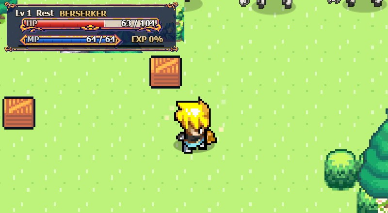
Catch your breath
Between fights your hero rests. With no monster within reach and no hits for 4 seconds, HP slowly refills at 1.5% a second (about a minute from empty to full), with a few soft white motes drifting up beside you. It only works when you are not hungry, and never during a duel. Potions are still how you heal mid-fight. Online friends rest the same way. A moment after a fight ends, coins and items lying nearby also drift to you on their own (potions stay put, so none is wasted at full HP).
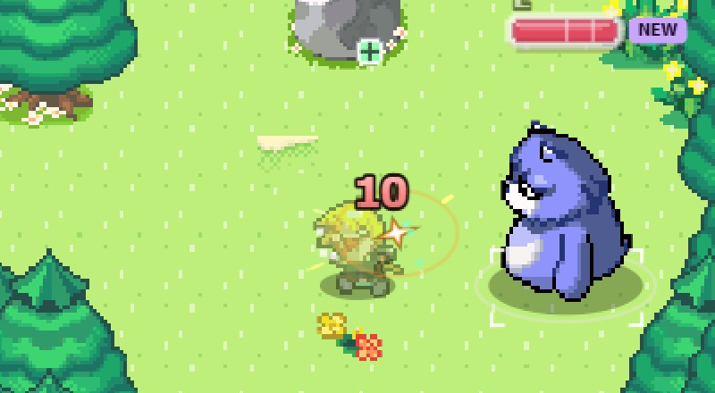
Rally
A gentle safety net. The first time a hit drops you from above 15% HP to below it, your hero steadies: 1.2 seconds where nothing can hurt them and 10% HP back, with a small green plus, a soft chime and a faint green ring at your feet while you are safe. Then it rests for 90 seconds. It never saves you from a hit that would defeat you outright, and it is off in duels. Online friends rally too.
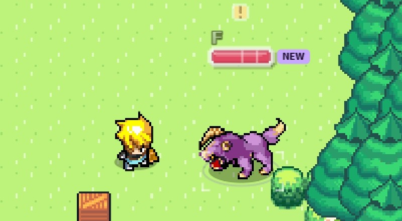
Spell warning
Monsters that cast spells now take a short breath first: they stop for half a second with a small ! chip over their name. Step aside, block, or hit them to interrupt it. If the spell does come, it is a little easier to parry. Bosses keep their own bigger wind-up, and your own familiars cast at once.
Taking turns
A crowd no longer all swings at once. Only the three nearest ordinary monsters fight you up close; the others wait a step back in a loose ring and come in when a place frees up. Waiting monsters still cast their spells (watch for the !). Archers and shamans keep shooting from range, and bosses always fight. Calm fields: monsters far below your level (about 16 levels past their zone) leave you alone and keep wandering, now and then showing a small soft ♪, unless you hit them first; elites, alphas and bosses always fight.
Heroes, variants and 1030 cards
1030 cards to collect. Out in the Wilds some monsters come as a variant in their own colours: Frost, Ember, Venom, Storm, Shadow, Radiant, Stone, Gale, Ancient, Little or Crystal, each zone with its own three kinds. Each drops its own card, with a skill of its kind's element. Any kind can turn up now and then outside its home zone, and summons sometimes give one too, so every card can be found; the Monster Book has a VARIANTS tab that says where each turns up. Every hero class is now a card too, and five more townsfolk joined. Each regular monster also has an Elite card (gilded with a gold rim, tougher, a stronger kind of skill), dropped by elite foes, and a Giant card (its own colours, much tougher, a heavy ground skill), dropped by the Alphas in the Heights and Depths.
The Market
A MARKET tile on the hub. BROWSE what other players on your game server have for sale and buy it with gold. SELL a spare card or piece of gear at your own price (it waits on the board for a week, even while you are away), or QUICK SELL it to the game. MY STALL lists what you have up; your gold from sales is waiting when you next open the market. Cards in your deck and gear you wear are never offered.
Layers and transcendence
Press V to transcend: +40% power for a while, and after you press C for your fusion, a magic circle stands behind you and the cards your fusion card was made from fly out of it, each striking nearby foes with its own spell (a basic attack sends them all at once). Pick cards, then press V again to layer them into one big combined spell.
- Each Layer element earns its own XP for skills on the LAYER page.
- Your Layer's colour tints your shield, spells and effects.
Ki
A later power system: choose a Ki form, build your Ki gauge in fights and unleash it. Ki forms can be upgraded and mastered.
Dojo lessons and seals new
Once you have beaten a dojo master, talking to them opens their board. Lesson of the Day is a rematch with a twist that changes daily, and each master has their own: Fierce Spirit (they hit harder), Iron Body (more health), Swift Feet (faster rushes), Cannon Day (more Spirit Cannons) or Quick Counter (they counter after 3 hits). Win it for Dojo Seals: 1 at Hearthvale up to 5 from the Last Grandmaster, once per master per day. It is still sparring at 1 HP, so losing costs nothing and you can try again. Spar is the plain rematch for a little gold. Spend seals on a card from that master's deck (4), sharpening your Spirit Cannon by one rank (8), 3 Meat Skewers (2) or 15 coins (3). Win 5 lessons for the title Dojo Disciple, 30 for Lesson Keeper.
Fair warnings in the dojo new
Masters now fight fair. Each match opens with a short bow, a calm beat before anyone moves. Before a counter, the master stops and a gold ! bubble shows over their name: hold L to guard, or step aside. Before a rush, they crouch and kick up a little dust. The shake when a counter lands is much softer now. Lose a match and the master tells you what beat you most (the counter, the Spirit Cannon or the rush) and how to answer it.
Belts and the Dojo Road new
Every dojo master you beat raises your belt: White, Green, Blue, Brown, then Black after all five. Each belt adds 2% damage, and the Black belt also takes 5% off the damage you take. Your belt shows as a little tied belt after your class on the HUD. Stand at the golden shrine in any dojo hall and press Enter to read the Dojo Road (it is also on a master's board). It lists all five masters and their towns, who you have beaten and with which belt, the level the next one wants, and each beaten master's Lesson of the Day.
Credits and version new
Esc > Settings > Credits lists everything the game is built from, each with its licence: the original Zenonia art and music, the Fredoka and Dela Gothic One fonts, and the free art packs. The version number (v1.0.0) is on the title screen.
Keep your hero safe new
In Esc > Settings, at the bottom:
- Export save downloads your hero as a small file. Keep it anywhere, or move it to another computer or phone.
- Import save loads a hero from that file. It asks first, and the hero you had is kept as a backup.
- Restore backup: the game quietly keeps three backups as you play (a new one at most every 10 minutes) and can bring back the newest.
If a save is ever damaged, the game opens with the newest good backup by itself.
Your play time new
Press Esc and the pause menu shows how long you have played today and in all. The Journey map (M) shows both too. Beside the buttons, This week is a little bar chart of how long you played on each of the last seven days (today in gold), with the week's total. Today's count starts fresh each new day, and time on the title screen or the hub doesn't count. When you come back after a while, the Welcome back card says how long your last visit was. The gentle A cozy place to rest card, which comes after an hour, also shows your total for today when you played earlier that day.
Cozy lettering and calm pop-ups new
All the game's writing now uses Fredoka, a soft, round font that stays easy to read. Messages show one at a time in a small warm cocoa pill with a gold edge and leave a little sooner. Damage numbers pop more gently, and a NEW TITLE! no longer darkens the whole screen. LEVEL UP is a gentler glow now, with fewer rays, rings and confetti and no bright flash, and it's a little shorter. A new hole or rift announcement has at most two soft rings and only a faint warm glow. Big pop-ups take turns: a NEW TITLE! waits until a chapter or place banner has finished. A new chapter uses thin, soft bars, and a place's name shows in a warm banner just under the messages, clear of the clock. Every message still goes into the Log (X). The small feed at the bottom right never repeats a message that's still showing at the top: it adds it once the pill has faded, in the same warm style. Screen shake is gentle everywhere now: even a boss slam or a finishing blow only nudges the screen a little, and colour flashes are a soft wash. You can still set SCREEN SHAKE to Half or Off in Esc > Settings. New cards flip in at the right a little smaller, three at a time: a big haul takes turns instead of filling the screen. The Enter prompts in the world and the key hints along the bottom share the warm look: cocoa pills with little wooden keycaps, always drawn on top so a passer-by or a tree never hides one. The buttons down the left side, the coin and hunger chips, the story and quest trackers at the top right, and the name tags over townsfolk and waystones are all warm cocoa too, so the whole screen feels like one cozy set. Menu windows match as well: inside the gold frame they're a dark cocoa now (the pause menu, Titles, the Log and the rest). The talk box and the crowned STATUS WINDOW that brings tips are dark cocoa too; the gold frame and crown are unchanged. Your HP and MP panel, the boss bar, the spell bar and the item belt sit on the same dark cocoa, and a monster's health capsule has a warm brown track. The hub, the title screen, Create Your Hero, the bag (now set in a warm, ember-lit study), the Monster Book, the Season board, the Tower and the other menus all follow the same warm theme.
Yellow damage on health bars new
When you or a monster take a hit, the lost part of the health bar turns yellow for a moment, then fades away, so you can see how much that hit took. Hits close together add to the same yellow chunk. It works on your bar, monster and boss bars. The pictures run left to right over about a second.
The balance pass new
Fights are slower and more careful now:
- Cards hit a quarter as hard, and their cooldowns are half again as long.
- Every hero starts with half the HP, MP and attack.
- A level gives 2 stat points, and each point gives a little less.
- Regeneration and Mana Font only work on SSS+ cards. Food and rest still heal you.
- Summons follow Korean-style odds: S or better about 1 in 50, SSS+ 1 in 2000.
A saved hero who had spent more points than the new rules give keeps the same mix, scaled down to fit.
FOCUS, a new stat new
The sixth row on the STATS page. Each point makes your card cooldowns 0.5% shorter, up to 20% in all.
x100 summons, and Souls new
Beside the x10 on the Summoning Shrine's console stands x100 (key 2). Every ten cards still hold one B or better. The reveal shows the ten best, with a count of every rank across the top.
On the left, the green MELT dome (M) turns spare cards into Souls: F 1, E 2, D 4, C 8, B 15, A 30. Only real spares melt: rank A or lower, never your best copy of a card, and never a card in your deck, on a key, in a loadout, locked or fused. It asks twice first. the gold COIN dome (B) trades 40 Souls for a summon coin, so every card you hunt is worth something.
Town crossings new
- Wherever a town meets a zone, the river crossing is now a wooden bridge with a lamp at each end.
- A signboard on each bank tells you what lies over the water: the zone ahead, or the town's name.
- The zone's colours fade softly across the river into the town, instead of stopping in a hard line.
Goddess towns new
- The 5th area of every zone is now a small, safe village: Haru's Haven, Aki's Haven, Tsuki's Haven, Sora's Haven and Hikari's Haven.
- The goddess stands on the plaza in the middle (her weapon and today's gifts), with the waystone beside her.
- A Smith (gear, and REPAIR for worn gear) and a Grocer (potions and food) face the plaza.
- No monster ever enters, and near the goddess you slowly heal.
- Talk to her for her shrine: HER WEAPON on its cushion, compared with yours, and TODAY'S GIFTS.
Verdant Fields in Zenonia 2's colours new
- The first zone of the Wilds keeps its own layout, but now wears Zenonia 2's colours: teal grass, blue-green pines, purple-brown cliffs and pale stone paths.
- Only the land changes: heroes, monsters and Hearthvale look as before. The river at the town's west gate is where the colours change.
A fairer summon new
- The ceiling: you always get a card of rank S or better within every 100 cards. The MILEAGE panel on the right of the console shows how close the next one is.
- Mileage: every card you summon is a mile. At 300 miles, press T (or the violet dome) and pick any kind of card you hold to get it at rank S; at 600, at rank SS.
- Auto-melt: switch AUTO on beside the Souls counter (U) and new F to D cards you already hold turn straight into Souls, so big summons don't fill your bag with copies.
Travellers on the road new
The Wilds have people in them now. Merchants, pilgrims, couriers in a hurry, a humming bard, a herbalist, an old couple and a young explorer walk across the areas near you, stopping now and then to look around. As you pass they turn and greet you. Press Enter beside one for a few words; now and then they hand you something small for the road. Pilgrims stop to rest by the goddess. Monsters leave them alone.
The goddesses' sanctuaries new
At every goddess stop (areas 5 and 10 of each zone) the goddess herself now waits in a ring of flowers, each in her own colours. Her whole area is a sanctuary: no monster appears there or crosses in, and standing near her slowly mends your HP and MP.
Talk to her (Enter) for her own screen: HER WEAPON, shown large next to the one you carry, and TODAY'S GIFTS, three things that change every day: a blessing that raises one stat a little for good, a card of the zone's best rank, and potions or summon coins. Each gift once a day.
Travel points and goddess shrines new
Areas 5 and 10 of every zone now have a TRAVEL POINT. Touch it once to keep it; then Enter at any lit waystone opens TRAVEL, which lists it under its zone.
Beside each one stands a goddess's crystal shrine: Haru of Spring, Natsu of Summer and more. She keeps one weapon made for your class, with its own name (Sakura Dawn, Hoshikaze Starwind, Yukihime Frostpetal...). It is a little stronger than the zone's best, and only one exists. She asks gold for it.
The Journey map is a real map new
Press M and the Journey opens as a hand-painted parchment map. One winding road (the dots and dashes run right along the painted road) starts at Hearthvale (bottom right) and snakes up the page through every zone: Verdant Fields, Twilight Grove, Skyreach Isles, the Frozen Abyss and the Sunscorch Desert, ending at Frostmere. The five zones are raised islands joined in one long snake of land, each painted in its own look: green meadows and trees, violet pines, clouds, snowy peaks, and golden dunes with the Sun Temple at the far end.
- Towns are the little painted villages: Mossbrook, Duskhollow and Cloudhold on the bends between zones, Mirage Springs partway along the desert road.
- A visited area shows its name where there is room for it (no two labels ever overlap); point at a dot, or tap it on a phone, to see any area's name. An area you have not reached yet shows a ? in its dot. Goddess towns (Havens) glow pink.
- Each zone's name and ranks sit where its road begins; its Guardian (or the Sun Temple) where it ends.
- ◆ travel points, ✿ goddess shrines and ★ NEXT (your next story goal) sit above their areas on small dark plates, so they stand out on the painted map (a travel point you have touched glows blue). A ring marks where you are: YOU on the road, or around the town you stand in, with a YOU ARE IN line under the title.
The footer keeps your play time, landmarks and the keys: J Story Journal, M / Esc close.
How fusion works new
The first time you open the fusion altar, four short pages explain merging, setting your fusion card, the Layer and its three swords, and the Guardian Halo. H or ? How fusion works opens them again.
The short version: your fusion card works inside the Layer. Press V, then C (FUSE on a phone). Pressing C outside the Layer now tells you so.
Picking your partner's skills new
When you choose a Bond Card, tabs under the card sort them by what they do: ALL, HIT, GUARD, HEAL and BOOST (Q/E, or click). The strongest come first. On the Bond page, AUTO (V) fills all six slots with a balanced set: three that hit, one that guards, one that heals and one that boosts.
Cave hazards that work new
On the old cave floors:
- The purple poison pools can be waded. You go slower and feel a small sting now and then; the plank bridges are safe.
- Rows of spike holes push up short spikes on a slow beat. Watch for the tips peeking out.
- Grey stone blocks and ice blocks slide when you walk into them.
Like every trap, a sting never takes you below 1 HP.
Cooler on phones new
Esc > Settings > FRAME RATE: 30 (cooler, saves battery) or 60 (smoothest). Phones start at 30. For even less work, set PERFORMANCE to Fast.
Small fixes new
- A zone's seal only breaks when its Guardian falls; it no longer opens by itself at a high level.
- Phones have a FUSE button, and taps no longer count twice, so toggles stay put.
- The Spell Deck can be used with keys or a controller (← →, then Q/E/R).
- On a phone, ☰ and ⛶ sit beside the clock, clear of the quest list.
- A monster's low-HP glow is a soft gold edge on its bar.
- Ecne and Daza no longer hop up and down while casting.
- The Wilds look more like Zenonia's own fields: pale sand clearings, darker grass under the trees and along the forest edges, flowers, tufts and mushrooms in the grass, and raised ledges with stairs in most areas.
- A monster standing behind a tree shows through it, as you do.
- Trees and rocks no longer hang over rivers, the sea, bridges or the paths up to side areas.
- Every zone of the Wilds is now Zenonia 2's own land: each area is a whole Zenonia 2 map in its own art. Verdant Fields has meadows, waterfalls and river terraces; Twilight Grove has the same green lands under its dusk light, with a hamlet, a thicket and a glade; the Skyreach Isles have cloud isles and green sky islands; the Frozen Abyss has crystal ice halls; the Sunscorch Desert has canyons. Walk off a map's exit (or touch a PATH ONWARD post) to reach the next one. The way into Mossbrook stays sealed until the zone's Guardian falls.
- The goddesses each sell one weapon of her own (HER WEAPON) and three gifts a day (TODAY'S GIFTS).
- The Magic Circuit no longer shows runes or 'undefined' in its empty slots.
- Attacks play the original Zenonia 1 and 2 frames exactly. A hero with a new head keeps it while standing and walking, and the head no longer slips off the body mid-swing.
- The hero select screen lists eleven heroes, OmegaKingX among them. Iron Sentinel and Chef Daddy are gone from it, but a saved hero of those classes still plays.
Master's Tea new
Win any match in a dojo and the master pours you a cup of their own tea before you go: a gentle buff for 10 minutes, shown in your buff list. It sits beside your meal and snack, so it never replaces your food. Each master brews a different one. Barley Tea (Hearthvale): +6% max HP, slow healing. Moss Green Tea (Mossbrook): +10% max HP, +3 DEF. Dusk Jasmine (Duskhollow): +6% crit, +6% speed. Iron Pot Oolong (Cloudhold): +8% ATK, 5% less damage taken. Frost Pearl Tea (Frostmere): +12% spell damage, faster MP. A new win pours a fresh cup.
Enemies
Monsters come in ranks from F upward, with their own spells, and some fight in special ways.
Name plates and health
A monster you hit shows a bubbly health capsule that flashes white and bounces with every blow, then fades away a few seconds after your last hit (monsters right next to you keep a soft one, so a big fight only shows the bars that matter): rounded ends, a thick white outline and a juicy red fill with a glossy shine, plus a yellow chunk for what your last hit took that stays a moment, then fades out. To keep a busy fight calm, only the monster you hit last shows a line above its bar, its rank letter then its name; the others show just the bar. A small purple sparkle at the end of a bar means that monster isn't in your Monster Book yet; the health slides down smoothly after each hit. Little coloured chips to the left of the bar show what it suffers: orange burning, green poisoned, blue frozen, purple slowed, yellow shocked, grey cracked. The health blinks when the monster is nearly down, and the killing blow pops its empty capsule with a few white specks; Guardians, alphas and bosses get a bigger capsule and a gold tag, and allies' capsules are green. Damage you take shows in soft red (brighter on a critical), so it never mixes up with the white and gold numbers you deal. Fast hits on one spot stack their numbers into a little column, and the words a kill leaves behind (gold, rested EXP, ELITE!) line up one above the other and fade out gently. Pressing a spell that is still cooling down (or short of MP) over and over keeps one message showing and updates it, rather than piling up copies.
Shielded foes
Some monsters raise a shield toward you; hits from the front only chip it. Flank them, or wear the guard down with finishers, spells and Shield Bash until it shatters: GUARD BROKEN leaves them reeling and taking extra damage. Their guard shows as a small blue bar under their health; it turns orange when it's about to break.
Break Rush
A broken guard opens a BREAK RUSH for about 2½ seconds: the monster is pinned in place, your hits no longer knock it away, and each one lands harder than the last (the ×N RUSH counter climbs, up to more than double). End it with your combo finisher after a few hits to SHATTER it for a huge blow. Friends in co-op can join the rush. Bosses have no shield, but a perfect parry on a boss's guard crusher breaks it too and opens a shorter rush on the boss.
Chargers
A red lane on the ground means a charge is coming. Step out of the lane, or dash into it as it hits for a perfect dodge. After a charge (or a crash into a wall) the charger is dazed and takes extra damage.
Monsters with a job
Watch the names. An Archer keeps its distance and shoots after a short aim (a dashed red line); dash in, block, or parry the arrow back. A Shaman hangs back and heals or wards its pack, so take it down first. A Warleader makes the monsters inside its red ring hit a quarter harder; drop it and the pack falters.
Elites
Now and then a monster is an elite: bigger, twice the health, and one trait in its name. Elites pay double EXP and extra gold, and always drop their own card, a rank higher than usual. Some days a Bounty contract asks you to defeat one, and the titles Elite Hunter (10 elites) and Elite Slayer (100) reward hunting them.
Elite Weekend: on real Saturdays and Sundays elites turn up 2.5 times as often; you're told when you first head into the Wilds that day.
- Each elite glows with a ring in its trait's colour. You're told when one comes near, and a small ELITE arrow at the screen's edge points to the nearest one out of sight.
- Swift: half again as fast.
- Vampiric: heals from the damage it deals, so block or dodge rather than trade blows.
- Armored: takes 30% less damage until its guard breaks.
- Volatile: bursts a moment after it dies; step out of the ring.
Black holes
Black holes tear open in the Wilds, drag in nearby monsters and rank up with each one they swallow. Kill their ten guards first, then step into the core.
Inside a black hole
One boss of the hole's rank guards a huge hoard. Bosses have phases, enrage, telegraphed spells you can parry, and guard crushers (a red ring that smashes through blocks).
The true villain new
When the Sun Sovereign falls, its shell cracks and your shadow steps out, calling itself Umbra: your class, your look, your deck and skill cards, your gear, all maxed out (level 99, top-rank cards and gear, three times the HP). It fights like a hero: combos, dashes, guards, your three cards and your Layer. Beat it to end the story.
The landlord's mercenaries new look
Skip the rent and the landlord sends his hired knights after you: dark-armoured guards with deep crimson capes, drawn in the same style as the rest of the game. Pay the rent at the bridge to call them off. Pay the rent three times and the landlord hands you the deed: the house is yours, and he never comes back.
Guardians, minibosses and more
- Guardians seal the end of each zone; beat them to open the road on.
- Minibosses and Alphas roam side areas.
- Black Hole Lords appear once a real week.
- Mercenaries come for unpaid rent.
- Survival rifts: survive 30 seconds for a rich reward.
- new The weekly Lord: once a real week, about 20 seconds into the Wilds, a huge boss appears a little way off and waits: it won't come to you. Walk up to it (or hit it) when you're ready and it rises to fight. Until you beat it, it waits again on your next trip. It only appears once your hero is Level 5. Eat the week's meal first (P shows which) and it takes double damage and deals half.
The world
One long road west through the zones, from Hearthvale through four more towns, with side areas, landmarks and secrets along the way.
A tidier world new
- Where Duskhollow meets the sky zone its map stopped in a hard straight cut; a bank of puffy clouds now runs the whole height of that edge.
- Crossing signs step aside when a house or tree stands in their spot.
- Townsfolk name tags never pile on top of each other: a tag that would cover another moves up clear of it.
- Crates and treasure chests never land on a lamp, brazier or statue.
- Lamp posts that stood buried inside pines in the Dark Woods are gone.
- Mossbrook: the square notch in the lake shore is land again, with a cliff side down its edge like the rest of the bank; the break in the diagonal cliff east of the old stairs is mended; the blue that showed through the trees by a roof is gone; and My Chest no longer stands in front of the Farm Board.
Hearthvale and the towns
Towns are safe zones with shops, townsfolk, quest-givers and services. Doors show what's inside, and outposts in later towns can be bought as homes.
Hearthvale's new look
Hearthvale is dressed after Zenonia's own village. A low two-row cliff runs along the lake, with picket fences on its top, and a long plank pier with a lamp either side leads out to a wide platform over the water. You can fill the watering can or fish from the shore or anywhere on the pier. A hedged garden full of white flowers sits east of the plaza, and barrels, stumps, rocks, mushrooms and pebbles are tucked by the houses. Nothing you own has moved: your house, farm, shops and townsfolk are all where they were. Mossbrook and Duskhollow, which share Hearthvale's green tiles, got the same barrels, stumps, rocks and mushrooms by their houses, and Duskhollow a hedged garden of its own. Frostmere has the ice lands' own: snow boulders, grey rocks, ice shards, snow drifts and an old bone here and there. Mirage Springs has the desert's own: sandstone boulders, crossed stakes, pebbles, dry grass and a sun-bleached skull or two.
Original Zenonia towns new
Mossbrook is now Zenonia's own town: a crossroads round a fountain square, hedge rows, fenced yards, terraces with steps, a river with a bridge, and the Inn with its benches. Duskhollow is Zenonia's village in the meadow. The shops, the house for sale, the Dojo and the townsfolk have moved into their buildings, and each farm is a fenced field of ten plots by the well. Hearthvale keeps its buildings and gets the same style: a raised garden with a cliff face and stairs in the meadow south of the road, hedge rows along the road, lamps only where the ways meet, and the small flowers and pebbles of the original grass. Cloudhold, Frostmere and Mirage Springs each have a raised garden behind their houses in their own land's stone: cloud stone with cloud trees, an ice wall with crystals, and sandstone with palms. Their road lamps now stand only every few houses.
Journey map
M shows a parchment map of the whole road west: every area, town and Guardian, and how far you've come.
The Sunscorch Desert
Past the Frozen Abyss, once its Guardian falls, the land turns to sun-baked sand: the Sunscorch Desert, the last stretch of the Wilds, eleven areas of palms, cacti, rock spires and old bones, with the golden Sun Temple as its final stage and Frostmere just beyond. Its monsters are the toughest on the road (A to SSS+): mummies, scorpions, sand golems, Sun Guardians and more. Sand blows across it, llamas wander it, and it has its own herb and ore spots, caves, sites and a Sands card set. It is part of Chapter IV, the road to the temple; it has no Guardian of its own. Sandstone mesas rise here and there, with sandstone steps cut into the rock to climb, palms behind and a daily chest on top.
Oases, ruins and sandstorms
Every desert area is one of five kinds: open dunes with sand mounds and bones, rocky badlands with spires and buttes, an oasis valley full of palms, bone flats under dead trees, or the ruins of old stone pillars. Small oases (a pond drawn with the desert's own shore tiles, dry grass tufts round it and palms beside it) dot the sands. Four set pieces wait to be found: the Buried Shrine, Caravan's End, the Twin Buttes and the Fallen Colonnade. About every four minutes a soft sandstorm drifts across the dunes for a while: warm haze and blowing sand, just to look at, it never hurts. Out on the open sand by day you may glimpse a mirage (they fade at dusk, when the heat goes): faint palms over a shimmering pool that fade away as you walk toward them.
Mirage Springs
Halfway across the Sunscorch Desert lies Mirage Springs, an oasis town ringed with palms round a cool pond. It has a waystone, an Item Shop, Innkeeper, Weaponsmith and Armorer at the west gate, an Elder, a Town Crier, an Oasis Angler and townsfolk with their own stories, and a house for sale (250,000 G) with a field and farm board; your renown there grows like in the other towns. Water-Keeper Amira gives a side quest, The Singing Well (Lv 52): follow the pond's fading song out to the Buried Shrine. Its dojo holds Sand Sage Oro (Lv 70), a master beyond the five: beat the Last Grandmaster first, then win the Gold belt, a desert card and a cup of Date Palm Tea.
Nomad Tents
Some of the desert's areas have a camp: a sand-cloth Nomad Tent off the road, with palms and cacti round it. Someone lives in each one, like the tents and snow huts elsewhere. Walk in to visit; each day they ask you to clear the monsters around their camp for a summon coin (a gold ! shows over the tent while there is a job).
Camps in Twilight Grove
Some of Twilight Grove's clearings now have a camp too: a tent with an open yard before its door, and someone living in it who asks for help clearing the monsters around it each day (1 summon coin). Every camp's resident has a name of their own.
Camps on the clouds
Skyreach's cloud islands have camps too: a tent well inside an island, with open cloud before its door. Its resident gives the same daily job as the other camp folk. Now every zone of the Wilds has camps, and each zone's camp folk talk about their own land: lanterns and owls in the grove, wind on the clouds, a little fire in the snow, water-skins in the sands.
Radar
A small round map on the left shows what's around you in the Wilds. Camps show as little tents: gold while their folk have a job for you today, dim once it's done. With touch controls it sits just right of the BAG, MAP, MEALS and MORE buttons, with the item belt beside it.
- White arrow: you, facing your way.
- Red dots: monsters (bosses bigger and orange); elites in their trait's colour.
- Purple ring: a monster not yet in your Monster Book.
- Gold star: your hunt target (Monster Book → Enter).
- Green ring: a monster on this week's hunt list; with no hunt target set, the next one and your progress show under the radar.
- Gold squares: unopened chests.
- Green: your partner and pets; blue: co-op friends.
Turn it off with RADAR in Settings.
Exploring the Wilds
- Landmarks give EXP the first time you find them.
- Side areas hold daily caches, forage, shrines and Alphas.
- Wells, waystones, herb patches and ore veins to use and gather.
- Animals roam and can be led home to the farm.
- Random chests, crates to break, and stones to push.
- Day and night, weather, weekly themes and zone events.
The Relic Hall new look
Down the stairs in the floor by the back wall of your home (walk up to them and press Enter). Six carved stone pedestals stand in a ring round a white rune circle. An empty pedestal's orb sleeps a dim blue; set a relic on it (walk up and press Enter) and the orb lights up, with the relic floating above it and its bonus written over it. The hall is a bright cream-stone shrine with a glowing rune circle in the middle: blue banners gently waving on the back wall, candles flickering in its two alcoves, stone pillars down both sides, and two urns of crackling fire either side of the red carpet up from the stairs. Stand on the circle and press Enter for The Ritual.
Food cards new
Every goddess has a FOOD CARDS tab: ten cards, one for each farm food, each for 1,000 of that food (1,000 carrots for the Carrot Card), and 26 more, one for every campfire dish, each for 100 of that dish (100 Grilled Fish for the Grilled Fish Card), once each. The campfire cards are stronger, often two buffs at once (Feast of the Deep: more damage, less damage taken and healing for 15s). Three more come from the butcher, each for 1,500 of what he gives: Raw Meat (+50% damage, faster), Thin Leather (much less damage taken and a shield) and Huge Bone (+60% damage, +25% critical). The tab sorts them into its own FARM, CAMPFIRE and BUTCHER tabs (keys 1 / 2 / 3); scroll with the wheel or up / down. Cast one from your action bar for a short buff: Wheat takes 25% less damage (10s), Carrot +40% critical (10s), Tomato +35% damage (8s), Pumpkin a 30% HP shield (15s), Strawberry +35% speed (12s), Lettuce heals 3% HP a second (15s), Nectarine cooldowns twice as fast (10s), Egg +80% damage (5s), Milk MP back and a little guard (12s), Fish 15% of your damage back as HP (10s). A small food icon over your head shows the buff and its time left.
Caves new
A cave's way in is a pale stone arch over a slowly turning purple swirl, tinted to match that land's cliff,, set into the cliff face of a raised plateau, so only areas with a plateau have one (about one in four: the green lands, the Frozen Abyss, a few desert areas, and now a few of the Skyreach Isles, whose new cliffs are pale cloud stone). It is in the same spot every time. Walk up into the arch to go in, and walk back down the way you came to leave. A cave is three short floors; the stairs down are at the far end of the first two. Caves are for solo play for now; online, the way in stays shut.
Hidden until found: until you find it, a cave is just plain cliff: no arch, no name over it, not on the radar. Walk along the foot of a plateau's cliff and, when you come right up to a cave, a puff of dust rises, two soft notes play and the arch fades in. The cave goes in your finds with a summon coin (the note also says if something old lies deep inside), its name appears, and it stays open from then on. The radar shows found caves in range as a little pale arch with a purple dot, like the caves' own, dimmed once you have taken that cave's chest today. Titles: Spelunker for finding 10 caves, Keeper's Friend for resting 10 cave keepers or ruins guardians.
Your caves, in the Journal
Esc ▸ JOURNAL ▸ CAVES lists every land with caves: how many you have found there and how many are still hidden, and the found ones by name. A gold ◆ means today's chest is still waiting in that cave; a dim ◇ means you have taken it today. Hidden caves stay unnamed, so it nudges you without giving them away. No two caves in one land share a name.
Cliffs in the clouds
A few Skyreach Isles areas now have small raised cliffs of pale cloud stone, with steps up the front, and a cave hidden in each one.
Caves hide in the cliffs
A hidden cave shows nothing at all: the cliff looks like any other. So when you pass a plateau, walk along the foot of its cliff. Come right up to a cave and its arch fades into view. When you pass close to one, your partner (or your pet) says something quiet about it, like a cool draught from the cliff: a hint to look along that cliff. With no one along, the hint shows as a soft note.
Inside a cave
Every cave floor is one of the first Zenonia's own hand-made cave maps, ones the game had never used before, so the tunnels, crates and old warp pads are just as the original artists drew them. Each land's caves look their own: in the dusk woods they are Zenonia 2's purple twilight dungeon, torches and old warp pads and all; in the warm lands the first game's lava dungeon or the second's ashen lava fields (red-hot grating and molten pools burn a little while you stand on them) , in the frost lands the first game's ice castle or the second's crystal ice caverns (shiny ice is slippery: stop walking and you glide on a little), in the desert the first game's sand temple or the second's golden temple, and elsewhere its dark rock caves. A cave keeps the same floors every visit. It is dark down there, and a soft light goes with you. On the first floor, daylight spills in through the way you came in (a soft moonlit blue at night), so the way out is easy to find. Blue crystals glow in the dark, so you can see them from a distance. Each floor has a few of that area's monsters, stalagmites and rocks, and two things to gather with Enter: a gold-ore pile (gold, sometimes a coin) and a glow crystal (a coin and some gold), once a day each. At the bottom a calm Cave Keeper watches a chest. Once it rests, the chest gives a card, gear and gold, and it fills again the next day. Every floor can be finished: old stone blocks or rock barriers that sealed off the stairs or the chest are cleared away as you come in, and no monster waits inside the rock.
Cave map
Down in a cave, a small map in the top-right corner fills in as you explore: everything near you is drawn in, rock dark and floor in the cave's own glow. Once you have seen them it marks the way out (green), the stairs down or the keeper's chest (gold), and the ore and crystal to gather. You are the blinking dot. A floor remembers what you found while you play, so going back up shows it again.
Cave traps
The deeper floors of a cave (from the second floor down) hide a few old traps, always in the same spots: a fire pipe set across a tunnel that pushes out of its brick and blasts flame four ways (a soft orange glow on the floor warns you first), a small ground fire that stings if you stand in it and lights up the dark, a red eye set into a rock wall that zaps and slows you if you stay in its gaze too long, and a snare of dark tendrils that grabs and holds you for a moment. They are gentle: a sting takes a few percent of your HP, a trap can never knock you out, and after one you have a moment to step away. None are near the way in, the stairs, the ore and crystals, or the keeper.
Every zone's caves feel different new
Caves in the green lands have mossy logs and blue crystals. Caves in the warm lands have red crystals glowing on embers and a warmer dark. The Frozen Abyss caves have tall ice crystals and ice clusters, with a cool blue dark. In every cave, soft motes drift in your light (snowflakes in the frost caves). Now and then a drop of water falls near you: a tiny ripple and one very quiet music-box note. Turn off Settings ▸ CHIMES and the drips are silent.
Ancient Ruins
Some caves hide an old temple archway on their last floor, with a warm light on it. Walk up into it to enter the Ancient Ruins: a buried sun temple, lit, with a few monsters a rank stronger, a Ruins Guardian and two temple chests (a card a rank higher, gear and more gold) once the guardian is down. Like the cave chest, they fill again each day.
Hunger and meals
Exploring makes you hungry. Press B for meal time: meals and snacks refill hunger and give strong buffs. When you eat, the little hunger bar under your frame fills up with a white shine and its bread icon hops. Starving costs health and strength. New heroes get hungry at half speed until Lv 6.
Falling in the Wilds
If you fall in the Wilds you wake at home, and from Lv 10 the gear you wear and carry shatters. Until then it only loses a quarter of its durability, and your partner is only knocked out. The game tells you once when that grace ends. Gear in your home storage is always safe, so keep spares there. Once you have touched a zone's safe point, the waystone by your front door (Enter) takes you straight back to it. If a boss beat you, a TRY AGAIN card names it and gives two tips for the next attempt.
High ground
Out in the Wilds some ground stands higher: a plateau with a rock face and grassy rim, built from the same cliff pieces as the old terraces. The only way up is the grass stairs cut into its face; its rim and cliffs keep you on whichever level you are on. To come down quickly, lean into its front or one of its sides for a moment and you hop down onto the ground below. It rises against the woods at the back of the map, with pines on top and bushes and flowers round its foot. When you come near, two or three of the area's monsters are up there, a little tougher than usual; they come back a couple of minutes after you beat them. A treasure chest waits at the back of the top once a day (rich loot plus an extra roll: "High ground treasure!"). A sword can't reach across the cliff between the levels; spells and arrows still can. You'll find them through Verdant Fields and Twilight Grove, and in the Frozen Abyss as icy terraces with a crystal-lined ice wall, white steps and snow pines (about two maps in five; always one in the first map west of Hearthvale), the same for everyone in an online room. Skyreach's cloud isles have none. On the radar a plateau is a pale block, with a bright notch where its stairs are.
High ground in the ice
In the Frozen Abyss the high ground is built from the ice lands' own terraces: a snowy top, a tall ice wall with crystals at its foot, and white steps up the middle. Snow pines stand at the back, crystal clusters round its corners. Guards and a daily chest work just as on the grassy ones.
Mesas in the desert
In the Sunscorch Desert the high ground is built just like the grassy plateaus, in sand and sandstone: a sandy lip along the top, sandstone sides and face, and sandy steps up the middle. Palms stand behind it, cacti and shrubs round its corners. Guards, the daily chest and hopping down work as everywhere.
Vehicles
Buy a pickup, bubble car, cargo truck, hauler or ice truck on the Farm Board's VEHICLES tab. Press 9 to get in or out; anywhere outdoors, if your car is far away it rolls up beside you. You drive at a little over twice walking speed in the Wilds, but not in towns, houses, black holes or rifts, and you can't fight at the wheel. The car handles like one: it speeds up gently over about a second, coasts to a stop when you let go, and turns smoothly and steadily (a little more slowly at speed) without sliding about, and brakes when you steer the opposite way. With a gamepad stick or the touch joystick you can steer at any angle, and tilting part way drives slower. Brush against a tree or rock and it glances off and slides round it; only a squared-up hit at top speed is a CRASH, a short stall with smoke. With a gamepad, bumps give a short, light buzz and a crash a slightly fuller one. While you drive, the view eases ahead the way you are going (more at speed), so you see what is coming, and settles back when you stop. A soft engine hum rises a little with speed (quiet, and it follows Volume and the 0 mute), and two music-box notes greet you as you get in and see you off as you get out. The wheels leave faint tracks on the ground behind you that fade after a few seconds. They match the ground: deeper blue-grey ruts that last a little longer in the Frozen Abyss snow, with white powder thrown up, and tan tracks with golden dust in the Sunscorch Desert. Small, soft puffs drift up from the back as you pull away, and now and then one while the engine idles. The body bounces softly as it rolls, slow at a crawl and quicker at speed, with a little dust kicked up behind. You can't fight at the wheel, so the attack key (J, or the attack button on a gamepad or touch) gives a soft toot-toot on the horn instead, in towns too; in online co-op your friends hear your horn and you hear theirs. A friend's car in co-op handles the same smooth way as yours and glances off trees and rocks too (it never gets the big CRASH stall). Your partner and pet ride along inside and hop out beside you when you park. Each model has paint jobs and a tint, chosen on the board.
Your first drive
The first time you get in, a calm card sums up how the car drives: hold a way to speed up, let go to coast, steer the opposite way to brake, the attack key for the horn, 9 to step out or to call the car, and the radar showing where it is parked. It shows once per hero.
Where you parked
Once you step out, your parked car shows on the radar as a little sky-blue car. If it is further away than the radar reaches, a small sky-blue notch on the radar's rim points the way to it. With a house in an outpost town, open the HOME menu (T) to choose which house your car waits by: pick SEND beside a house and it will be parked there (HERE marks where it is now). It doesn't have to be your home point. (Or press 9 anywhere outdoors and it rolls up to you.)
Headlights
After dark the car throws two soft, warm beams ahead the way it faces, and its lamps glow. They fade in through dusk and out at dawn, and they show in photos too. Two small red tail lights at the back glow faintly at night and brighter whenever the car slows down, by day as well. A friend's car in online co-op has its lights too.
Abyss Tower
U: climb the tower floor by floor, with a boss every few floors and your best floor remembered. Every eight floors the tower takes on the next zone's look and monsters, from the Verdant Fields up to the Sunscorch Desert from floor 33 on.
Game log and quests
X keeps everything that happened. The tracker shows your story step, daily contracts and goals. The story runs in chapters, with its own beats and a final fight.
Home & farm
Your home in Hearthvale is where you farm, cook, store things, decorate, sleep and look after your animals.
Your home
Sleep in your bed for a Well Rested bonus. The catalogue book sells furniture and new rooms; comfort makes rest stronger.
Decorating
Buy furniture, then place it tile by tile. Build extra rooms; each adds a door in the back wall.
Farming
Plant seeds in your plots, water them and harvest when ripe. Fill your watering can with Enter at the lake shore or a well; when someone is standing right beside you (like the Lake Angler), Enter talks to them instead, so take a step away to fill up. Rare crops, more plots, a farm yard with animals and buildings come as your Farm Level grows. Rainy days: about one day in four it rains overnight, and the first time you play that day every growing crop is watered for you (rare crops for the whole day). On a rainy day the little sky in the clock shows a soft drizzle. Tilling rough ground tills the rough plots beside it in the row too. In the seed list, R plants the chosen seed in the whole row: every empty, tilled plot beside this one, as far as your seeds go. Harvesting a ripe plot also gathers the ripe plots beside it in the row, with one message for the lot. When watered crops dry out (they then grow at a quarter of the pace), a soft message tells you once. Wet soil looks darker. Once you build the Water Mill (Farm Board BUILD, 6,000 G at Farm Level 6), Hearthvale's own fields water themselves; the outpost fields still need the can. Farm animals: press Enter beside one to feed it a crop, and half a day later to collect its egg, milk, wool or truffle; every farm animal close by is looked after with the same press. A soft message tells you when an animal has something ready.
Lettuce and nectarines
Two more crops at the Grocer (14 and 24 G a packet, and monsters sometimes drop them). Lettuce is quick: ripe in 4 minutes of wet soil, 3 to 5 a plot, and eaten raw it slowly heals you (Garden Fresh). Nectarines take 15 minutes, 2 or 3 a plot, sell well, and a raw one gives +12% speed (Sunny Step). Animals eat them, and they turn up in farm orders and town requests. In the kitchen: Crisp Leaf Salad (2 lettuce, 1 tomato: Green Shield, sturdier and slowly healing) and Orchard Fruit Bowl (2 nectarines, 2 strawberries: Sunny Days, faster with more EXP). At the campfire: Grilled Nectarine (2 nectarines: +18% speed) and Lettuce Wrap (2 lettuce, 1 raw meat: a little ATK and slow healing).
Selling crops and market day
The General Store now buys every crop you grow (its SELL tab), at the price on the crop. Everyday seeds cost 10 to 30 G, so each plot turns a small profit, and a good one on market day. In the SELL tab, Enter sells one and R sells the whole stack. Each day one ordinary crop is in demand and sells for double: it is listed first with a gold star, and the Farm Board's FARM page names it ("Market today: Tomato sells for double").
Farm Board
Spend farm points on upgrades, including the Loyal Hound that brings your dog back to fight beside you. Its left page shows your field at a glance: how many plots are ripe, dry and growing. Wide Spout (3 levels) lets one fill of the watering can water up to 3, 5 or 7 growing plots side by side in a row; it stops at an empty, wet or ripe plot.
Cooking
Cook crops, catches and materials into meals with buffs in your kitchen. Cook at the town campfire too, and share feasts with friends online.
Storage
A chest at home for spare cards and gear, so your bag stays tidy.
Town life
The towns are full of things to do between hunts.
House visitors new
A town house whose people are all out today used to be locked ("Nobody home"). Now a visitor rests there: a traveller off the road, a different one each day, with a gold mark over them. Talk to them once a day per house for one random gift: a permanent stat (ATK, max HP, DEF or crit), a purse of gold, a piece of gear, a few summon coins, or a black hole quest. The later towns give more.
Shops
Buy potions, food, seeds and supplies, and sell what you don't need. Each town has its own sellers. A new hero starts with 60 gold, 3 bread and 3 small HP potions (on your belt: 5–8). When your HP runs low, your first healing potion's socket glows green, and a socket pops when you use it. Your steps kick up tiny soft puffs of dust as you walk, and a dash bursts off with a few bigger ones. Down the left side, small buttons show their key in a coloured badge (G Partner, X Log, Z Workshop, O Sets, U Tower, P season tier); click one or press its key. News lines (loot, coins, the Monster Book) show near the top of the screen on soft dark pills, two fresh at a time; they rise in and glide up as older ones fade. Loot hops out of a beaten monster with a little bounce, drifts in by itself when you are near, and each pickup leaves a tiny twinkle over your head (gold for coins, pink for potions, pale blue for the rest).
Fishing
Cast at the pond and wait for a bite; strike too soon and the fish swims off. Fill the Fish Book, and fish together online for bonus gold.
Oasis fishing
The Oasis Angler in Mirage Springs lends you a rod at the town pond: a hot sky, palms on the far bank and a teal pool with white lotus. Its twelve fish are all its own, from the Date Minnow and Sand Carp to the Scarab Perch, the lapis-and-gold Oasis Pharaoh and the legendary Well-Singer (and now and then a Lost Sandal). The Fish Book has a third tab, Oasis, for them.
Forge
Work metal at the forge with a hammering mini-game.
Campfire and pantry
Cook at the town campfire and store food in the pantry.
Townsfolk and favours
- Townsfolk keep daily routines and ask favours (a mark over their door).
- In town, the foot of the screen shows your keys as little keycaps (Tab inventory, Enter talk, H back to the Hub), and anything you can use (a door, the campfire, a waystone, your chest) shows a small bobbing bubble with an Enter keycap and what it does.
- By day a few small butterflies drift over the towns; they fade away at dusk. Out in the Wilds the pines sway gently in the breeze, leaves tumble down through the grass lands, soft snowflakes drift over the ice lands, fireflies glow and fade in Twilight Grove, little streaks of cloud ride the wind over Skyreach, gold sparkles rise in the temple sands, and soft ripples spread on the lakes and rivers (now and then a little fish leaps).
- Names over townsfolk and waystones sit on soft dark pills, so they read over grass, paths and water.
- When you talk to someone, their portrait shows in a little framed window beside what they say, and their words appear gently letter by letter (Enter shows the rest at once; Enter again goes on).
- Renown in each of the five towns: Mossbrook, Duskhollow, Cloudhold, Frostmere and Mirage Springs. Renown 5 in all five earns the MYTHIC title Friend of the Five Towns.
- Rent to the landlord, or mercenaries come.
- Travellers, the Curio Collector, the butcher, the Lantern Table card game and more.
Cards & deck
Every monster can drop its card. Cards are your spells, and the heart of the game.
Spell deck
Build a deck of up to 10 cards and choose which three sit on your spell bar. Your character page shows your gear slots too.
Loadouts
Beside the SPELL DECK title are three numbered loadout buttons. Click an empty one to save your deck, your Q / E / R spells and your fusion card as they are; click a saved one to switch to that set-up in one go, and Shift + click to save over it. The one you are on lights up gold and saves your changes as you make them, so switching away and back never undoes a card you put on since. Cards you have since sold or put away are just left out. Above your cards, the gold ✦ chip (next to ALL and the element chips) shows only the cards with a new move.
Deck synergies
Your whole deck counts, not just Q / E / R. Element focus: 4 or more cards of one element make that element's spells 10% stronger (6 or more: 20%). New moves: 3 or more gold-dot cards cut their cooldowns by 10% (5 or more: 15%). Rainbow: 6 or more different elements add 6% to every spell. Monster pack: 6 or more monster cards add 10% max HP. Village friends: 3 or more villager cards give your partner 10% more HP and attack. Helping hands: 2 or more heal or buff cards cut their cooldowns by 10%. When you are one card short of a synergy, the strip tells you what to add. Three synergies at once earn the Deck Architect title. What is active shows on the strip under your cards (hover a card to see that card instead).
A bigger deck as you grow
The deck holds 10 cards, and one more at levels 15, 30, 45, 60 and 75: 15 at most. A note tells you when a place opens, and the Magic Circuit spreads its places round the hero to fit them all.
Quick deck building
On the Spell Deck page, N builds your best deck: your Q / E / R spells stay, and the other places fill with your highest-ranked cards, one of each kind. Shift + N builds a focus deck round the element you own the most cards of (aiming for the bigger +20% focus). O sorts your cards by newest, rank, element or power. Hovering a loadout button names its synergy, and the Magic Circuit shows yours under the hero. In the Magic Circuit (DECK), P adds up every passive your deck gives.
Locks, undo and element counts
Point at a card on the Spell Deck page and press L to lock it: a small gold padlock marks it, and N / Shift + N always keep it when they rebuild your deck (locking a card that is not in the deck puts it in, if there is room). Press L again to unlock. U (or Ctrl + Z) undoes your last change to the deck, spells or fusion card, up to 15 steps back while the book is open; it works in the Magic Circuit too. The small DECK column right of the R slot counts your deck's cards by element: each element's symbol and how many, most first. Point at it to see the element names. When more synergies are on than fit on the strip, it ends with +N more.
Building toward a synergy
Point at a card on the Spell Deck page and a third line under its name says what it means for your synergies: a card in your deck shows Taking it out loses …, and a card outside it (when your deck has room) shows Adding it gives …. When a change turns a synergy on or makes it stronger, a gold toast names it with a soft three-note chime; one that switches off gets a quiet grey note (undo brings it back). When the synergy strip ends in +N more, or there is more than one thing you are close to, point at the strip to see the whole list.
Finish a synergy
Press H on the Spell Deck page and the game looks through your whole collection for one card that turns on a synergy you do not have yet, without losing any you have. It goes in if the deck has room, or else swaps out your weakest card that is not a Q / E / R spell and not locked. The toast names the swap (U takes it back). Pick up a new card and it says when the card turns a synergy on, or, when your deck is full, that it could give you one if you swap it in. Each saved loadout button has a thin line in the colour of the element it holds most of.
Draw pile (optional)
Press K on the Spell Deck page to switch the draw pile on or off. When it is on, the rest of your deck is shuffled into a pile; every spell you cast from Q / E / R goes to the bottom and the top card takes its slot (keeping the cooldown), so your whole deck gets played, card-game style. Spells cast this way hit 10% harder. A small NEXT label by your spell bar shows what is coming, and a slot flips with a soft chime when a new card lands in it.
Card collection
Every card you own, with its rank (F up to SSS+), element and passives. Higher ranks cast stronger spells.
New Arcana: twenty-eight new moves
Arcana are skill cards with no monster: they come from Summons (about one in five), cave hoards and rich chests, and mini bosses, guardians and bosses drop one of their own element about one time in four. Twenty-eight of them do something no other card does, among them: Chain Spark hops from foe to foe, Gale Spiral winds shots out in a spiral, Frost Orbit circles you with shards, Ember Mine waits for a foe to step close, Abyss Maelstrom keeps pulling foes in, Mending Circle heals you and friends inside it, Briar Hedge lays a slowing thorn line, Doom Brand marks a foe to erupt later, Root Snare pins the nearest foes, Hail Cloud follows you and drops hail, Ember Wake leaves flames in your footsteps, and Sentinel Star hangs where you stood, zapping foes. Every hero is given one of them, at rank C, by the Card Oracle a few seconds after stepping out into the world, so you can try a new move straight away.
The new moves in play
The first twelve, each mid-cast. The lasting ones (orbit, mine, vortex, circle, hedge, cloud, wake, star) keep going for a few seconds on their own and hit without knocking foes out of reach; they stop if you fall. From rank S, and again at SSS, each one grows: two more hops, eight more shots, one more shard or snared foe, a wider mine, stronger healing, a bigger brand, or a longer vortex, hedge, trail, cloud or star. The card's text says which.
Six more new moves
A second wave of Arcana with moves of their own: Frozen Lane lays a strip of ice that freezes foes standing on it, Swap Step trades places with the nearest foe and leaves it dazed, Life Tether drains one foe to heal you, Rewind puts your health back to what it was three seconds earlier, Hex Link ties up to four foes so a share of every hit spreads to the rest, and Overcharge makes your next three spells give back the MP they cost. They grow at rank S and SSS like the first twelve. Life Tether shows a soft purple line to the foe it drains. Every card with a new move wears a small gold dot wherever you see it: your collection, your deck, summons and the Monster Book.
Five more new moves
The third wave: Echo casts your last spell again a moment later at 60% power; Phase Shift makes you untouchable and quicker for a moment, cutting foes you pass through; Guard Breaker sends out a shockwave that breaks every raised monster guard (a BREAK RUSH opens); Golden Touch marks foes so they drop twice the gold if they fall within six seconds; and Ember Strikes makes your next five normal attacks each set off a little burst of fire. Like the others they grow at rank S and SSS.
A fourth wave
Snowball rolls ahead, growing bigger and hitting harder the further it goes; Time Warp makes your other two spells ready again at once; Mana Spring refills your MP while you stand in it; Banish sends the nearest foe away for a moment and it comes back dazed and hurt; and Grapple Hook yanks a far foe right up to you and stuns it. Bosses can't be banished or hooked.
Arcana pairs
Some new moves work together. Cast the first, then the second within four seconds, and the second hits 40% harder, with its pair's name over your head. There are fifteen to find, and every card with a new move is in at least one, such as Root Snare then Doom Brand (Sealed Fate) or Hex Link then Chain Spark (Conduit). Each card's page in the Monster Book names its partner; the pair's own name shows once you have found it. Find them all for the Pair Master title.
Arcana in the Monster Book
The Monster Book's last tab, ARCANA, lists every Arcana skill card. The ones you hold show their art in colour and the rest stay dark; the cards with new moves wear a little gold dot. Choose one to see its element, type, move, how many you hold and your best rank. Enter or C shows your best copy full size. Every Arcana kind you have ever held counts toward your collection: each tenth kind pays Summon coins (10 at ten kinds, 20 at twenty, and so on), and thirty kinds earn the Arcanist title. The top line shows how far you are from the next reward. Each Arcana also counts how often you cast it: at 50, 200 and 500 casts it earns a mastery star and hits 5%, 10% and then 15% harder for you; its page shows the stars and the next goal. In the grid each square shows its stars, today's featured card has a small lilac diamond, and F switches between every Arcana, only the ones you hold, and only the new moves.
Try an Arcana
On the ARCANA page, T takes you to the training arena with that card on your Q slot at rank C, even one you have never held, so you can see its move on the dummy before you go looking for it. Nothing is saved: Esc brings you straight back where you were, with your own spells. A click on the Summoning Shrine's FEATURED TODAY panel tries that card the same way. (Not while playing online.)
Featured Arcana of the day
Each day the Summoning Shrine puts one Arcana in the spotlight (the panel under YOUR RECORD). When a summon lands on an Arcana, about one in five of them, it is the featured card 40% of the time, at whatever rank you rolled. A new card is featured every day, so the one you are after comes round. Under it, SWAP 3 SPARES FOR IT trades three spare Arcana (extra copies of kinds you already have, never ones in your deck, spells, fusion or loadouts) for the featured card at the lowest rank of the three.
Summon
Spend coins in a pachinko-style summon machine for new cards, with reaches, jackpots and big reveals. Summons come in two sizes, side by side on the console: ×10 (key 1 or Enter) and ×100 (2), one coin a card. There is no single-card summon. Every ten cards hold at least one of rank B or better. After a ×100 the reveal shows the ten best; press Enter to page through all the cards it gave you, and see how many went to your bag and how many wait in Storage at home (your bag holds 200). Coins come 10 an hour (even while you're away), from 1 in 20 monsters, and from daily gifts and quests.
Monster Book
- (the minus key, or MORE → BOOK on touch): every monster in the game, 299 of them. Each one you defeat fills a page with its portrait, how many you've beaten, the best card of it you hold, its element and spell, and where you first beat it. Monsters you haven't met show as grey silhouettes, so you can see their shape. It doubles as a hunting guide: a page says which zone the monster lives in, even before you meet it (monsters off the road come from black holes, rifts and the tower). Each zone has its own filter tab, the Sunscorch Desert's included: the Sand Golem, Scorpion, Desert Mummy and Sun Guardian are filed there, and a page also names any other zone the monster roams ("Sunscorch Desert · also Twilight"). A zone whose pages are all filled pays once; if you already had them all, it pays the next time you open the book. Every 10 pages pays coins and gold, and co-op kills count for each friend too. Filling it earns titles: Naturalist (25 pages), Monster Scholar (100) and Grand Bestiarist (250).
Out in the world, a monster whose page is still empty wears a small purple sparkle at the end of its health bar, and the first time one comes near you're told "New for your Monster Book". Some days a daily contract asks you to fill 2 new pages.
Tabs along the top filter the book: ALL, each zone, OFF ROAD, MISSING (only the pages still empty) or NO CARD (monsters you've beaten whose card you don't hold yet: a card-hunting list). WEEKLY lists five monsters to beat 5 times each this week (a new list every Monday): each one done pays a little, all five pay coins, gold and a top-rank card. The last tab, RECORD, is your hunter's record: kills, pages, zones, mastery stars, cards, your rarest card, most-hunted monster, hunt target and the Monster of the Day. Press S there to save it as a picture to show a friend. A tiny card in a page's corner means you hold that monster's card, coloured by its best rank (bag and storage both count). Press C (or click Best card) to see your best copy of that card full size. Mastery: beat the same monster 10, 50 and 200 times for ★, ★★ and ★★★: +3%, +6% and +10% damage against it, shown under its name. Press Enter on a page to hunt that monster: it shows as a gold star on the radar (with its name and home under the radar), a gold ★ arrow at the screen's edge points to one out of sight, and you're told when one is near and when one falls (Enter again stops). Monster of the Day: each day one monster from the zones you've reached is featured (the Sunscorch Desert's monsters join in once the Frozen Abyss's Guardian has opened the road), and its card drops twice as often; you're told when you head into the Wilds, and it wears an orange ◆ in the book. Switch with Q / E or a click. Complete a zone (every monster that lives there) for a one-time prize: coins, gold and a card from that zone at its top rank; its tab then shows a ✓.
The desert's pages
The SUNSCORCH tab holds the desert's own monsters: the Sand Golem, Scorpion, Desert Mummy and Sun Guardian (4 pages). Fill all four for 60 coins, 7,500 G and a top-rank desert card.
Card sets and fusion
O: collect themed card sets for lasting bonuses. At the Fusion Fountain, fuse cards to rank them up (a failed fusion can break a card, so protect it).
Bag and gear
The Bag pages have a calm warm frame: dark brown with one thin gold line. Weapons, armour and accessories you can see on your hero, plus goods, materials and food. Gear wears down and can be repaired.
Workshop
Z: craft gear from materials, upgrade it, make farm items and keep a recipe book.
Progression
Plenty to grow beyond levels.
Levels and stats
Level-ups raise HP, MP and attack and give stat points to spend on STR, VIT, INT, DEX and AGI (the glowing +N STAT chip under your HP opens the STATS page when clicked). From Lv 50 you can reset your points for free. Each level-up names your next unlock.
Character sheet
The right page of your inventory is your character sheet. At the top are your hero, name, level and class, with an EXP bar showing how close the next level is. Below are your six gear slots in two rows, each with its name and what you wear (click one to see that slot's gear in your bag). Main stats shows HP, MP, Attack, Defense, Speed and Crit in big numbers, and Passives lists what your deck, gear and fusion card give you. ALL STATS (or C, or a click on any main stat tile, which opens it on that stat) opens every stat sorted into Offense, Defense, Recovery and Movement; point at one to see what it does, and press C or Esc to close it. When you wear pieces of a gear set, GEAR SETS at the bottom shows each set, how many pieces you wear and the passives it gives (ticked when on). Your spells and fusion card are on the Spell Deck page.
See before you choose
In the bag, the gear you point at (or have selected) shows what would change if you wore it: the main stat tiles get a green + for more and a red − for less, and a note above them names the item. On the Stats page the same tiles show what one more point in the stat you are on would give. Your combat records (best combo, Paybacks, reactions, parries and the rest) sit under their own heading at the foot of the Stats page.
Gear details and bag tools
Point at a piece you wear on the character sheet to see its name, rank, what it gives and its set. On the Bag page, O sorts your gear by slot, by rank (best first) or newest first, and the game remembers your choice. V offers to sell weaker gear: every piece you are not wearing that is weaker than what you wear in its slot. It tells you how many pieces and how much gold, and a second V sells them. Set pieces, socketed gear and weapons for other classes are never included.
New items
Gear and cards you have not looked at yet carry a small gold dot in the Bag and the Card Collection, and the BAG and CARDS tabs show a dot while anything new waits there. Point at an item or select it and its dot goes; leaving the tab clears the rest. On the Card Collection page, O sorts your cards by rank, by element or newest first (fusion cards stay at the front), and the Spell Deck page follows the same order.
Locking gear
Select a piece in your bag and press L to lock it: a small gold padlock marks it, and it can't be sold, not by X, not by sell weaker (V), not at shops and not from Storage at home (SELL ALL there keeps locked cards and gear). Press L again to unlock it. The bag title shows how full it is (it holds 80 pieces), and the details under the grid keep the Equipped comparison to one line.
Card info and card locks
In the Card Collection, point at a card for a quick info card: its name and how many you have, rank and element, its spell (power, MP and cooldown), its first passive, and whether it is on a spell key, in your deck or not. L locks the card you are on (the same lock as on the Spell Deck page): a gold padlock marks it, the best and focus deck keep it, and it can't be sold or discarded, though a spare copy of it still can. The title shows how full your collection is (it holds 120 cards; more go to Storage at home). F shows only one element's cards (the title names it); keep pressing to go through each element you own and back to all.
Stats page
Your stats, attack, guard, crit and dodge, and where your points went. Spend points one at a time with +, or press Auto spend (V) to put them all where your class wants them: strength and vitality for fighters, intellect for mages and summoners.
Titles
Y: 50 titles earned by what you do: kills, parries, perfect dodges, guard breaks, Paybacks, element reactions, long combos, farming, fishing, co-op and more. Wear one for its passives.
Combat titles
The newer combat moves earn titles too: Payback Artist (land 150 Paybacks), Elementalist (set off 300 element reactions) and Chain Master (land a combo of 40 hits, the ZENONIA!! grade) Unscathed (win 50 Flawless fights) and Element Sage (set off every kind of element reaction at least once; the first time you find each kind, a message says so with your count). Each gives its passives while you wear it.
Combat records
The bottom row of the STATS page keeps your combat records: your best combo, Paybacks landed, element reactions set off and perfect parries, and a second row with Rallies, Flawless fights, perfect dodges and guard breaks. Big counts shorten to 24k and so on.
Season, daily contracts and attendance
P: a season track of tiers and rewards. Three daily contracts show in the tracker at the top right (one kind asks you to cast Arcana spells 10 times, a gold-dot card counting twice), and a 28-day attendance board gives a gift each day you play (a missed day costs nothing). All of these open together with the SEASON & DAILY unlock.
Raids: twelve lost bosses
The Raid Herald by the Hearthvale fountain sends you into sealed arenas against bosses that neither Zenonia game ever put in front of a player. There are twelve now, from level 55 to 99: The Gilded Mimic (55), Skyrender Wyvern (60), Pyrewing the Ember Imp (62), Umbral Grasp (65), Clockwork Arachnis (68), Terra Wyrm Gorvath (70), The Nightwing Fiend (75), The Fallen Seraph (80), The Golden Oni Mask (85), Oblivion the Horned Maw (90), Kaltheim the Glacial Wyrm (95) and Azgaroth the Demon Lord (99). Each raid has four minutes before the boss enrages. Minions crawl out every 25 seconds: shadow claws, or in Kaltheim's raid the Frost Claws, which have a card of their own. Every boss drops its own card (SSS, and always SSS+ the first time) with its own signature skill, such as Treasure Bite, Cinder Swarm, Arc Lattice, Nightfall Rend, Thousand-Eye Glare, Absolute Zero and Abyssal Dominion. They are all on the card list page (cards.html) as Raid boss.
Partner and pets
G: your partner's record, gear and bond. Click or tap your partner (or your pets) for a pat: a heart and a soft chime, and the first pat each day warms your partner's bond a little. Stand still for a while with no monsters around and your companions doze off, a little "Z z" drifting beside them. A little campfire crackles to life beside you then (your companions settle round it, facing the flames), and you, your partner and pets slowly mend (3% health and MP a second) until you move on. Rest by the fire at night and you may see a shooting star: make a wish, and for 5 minutes monster cards drop a little more often (at most one wish every 20 minutes; a little ☆ with the minutes left sits on the radar while it lasts). At dusk and night, fireflies drift around the fire. It crackles softly, and the music eases down while you sit by it. In co-op, friends get their own resting and campfire too (the host's fire is the one that mends, and wishes are the host's). Standing by it, press Enter to cook snacks over it, just like at a town campfire. Rest together a little longer and, once a day, your partner brings you a gift: a pouch of gold, some summon coins, or now and then a monster card. N: your pets, including the Loyal Hound with its food bag, training and evolutions, the wolf and the dragon egg.
Unlocks
To keep the start calm, the side systems open one at a time as you level. Until then their buttons, keys and tips stay out of the way.
UNLOCKED cards
When something opens, a card slides in telling you what it is and which key to press. It never covers a level-up or an area banner. Systems open one at a time, at least 2½ minutes of play apart, so a level-up may say Opening soon. Block opens at once if a crowd starts hitting you.
The Unlocks list
Open it from the pause menu (Esc → JOURNAL → UNLOCKS) to see what's open and what's still ahead.
Unlock order live from the game
| Block | Lv 3 (or a crowd hits you) |
| Workshop | Lv 4 |
| Log & titles | Lv 5 |
| Summon | Lv 6 (or first Guardian) |
| Season & daily | Lv 6 (or day 2) |
| Layer & Ki | Lv 8 |
| Ranked Arena | Lv 10 |
| Abyss Tower, card sets | Lv 15 |
Online co-op is open from the start, so friends can play together from their first minute.
Online co-op up to 4 players
Host a room on your home network and up to three friends join your world. Everyone keeps their own save, cards and rewards.
Where to play together: on the game's website or in the Android app, online co-op, the market and hero codes just work: they meet on the website's game server, so friends can join from anywhere. (You can also run your own server at home with python tools/serve.py, for friends on the same Wi-Fi.)
Playing together
Friends' heroes, pets and partners fight beside yours, with their own panels and party quests. Everyone hears the fight and sees each other's shields, Layers and effects.
A friend's view
Each friend plays from their own screen. A friend far below the host's level is sidekicked to the host's level minus 3, so they can keep up.
Party features
- Host or join with a room code.
- Trade and friendly duels (T), quick chat and emotes.
- Revive fallen friends, party bosses and party quests.
- Dungeon runs, raids and the Abyss Tower together.
- Loot rolls: Need or Pass on rare drops.
- Fish and cook together, share feasts, help on each other's farms.
- Visit friends' homes; party titles and a party record.
Getting connected
Pick ONLINE CO-OP on the hub. The host picks HOST and shares the 4-letter room code; friends pick JOIN and type it, from anywhere. If the server has been quiet it can take up to a minute to wake the first time. (On a home server, the host's game also shows its home-network address for friends on the same Wi-Fi.)
Playing on the website new
- The game's website has its own game server, so online co-op, the market and hero codes work there with no PC of yours running.
- Play on the website or in the phone app: both meet on that server. The host picks ONLINE CO-OP ▸ HOST and shares the 4-letter code; friends anywhere pick JOIN and type it.
- SETTINGS ▸ GAME SERVER shows which server you're using. Type another address to use a home PC instead (like
10.0.0.142), or leave it empty to go back to the website's. - Your hero is still saved on your own device. To move it between the app and the browser, use SEND HERO and GET HERO.
The Market with friends new
- On the website and in the Android app, the MARKET board lives on the website's game server, so everyone playing shares one board. List cards and gear, and other players buy them even while you're away.
- The market has CARDS and GEAR tabs to browse, plus SELL and MY STALL. Press F (or the SORT button) to sort: newest, price low or high, best rank, or name.
- Your own home server instead: run
python tools/serve.py 8766 --lanon your PC. Friends on the same Wi-Fi openhttp://<your PC's address>:8766, or type that address in SETTINGS ▸ GAME SERVER in the app. That board is separate from the website's, and your PC has to stay on.
Arena & training
Test yourself in the coliseum.
Ranked Arena
Climb ten leagues against arena fighters for RP, coins, cards and gear. Opens at Lv 10.
Training dummy
A dummy that never falls, with a board for damage per second, last hit, biggest hit and total. Training uses F to attack, H to block and Shift to dash.
Reactions drill
A fifth training drill (press Y or click the panel to switch). The dummy is frozen, then burning, poisoned, then cracked, changing every 4 seconds with a word over it that names the elements to use, so you can practise the element reactions: fire or earth on frozen, ice, lightning or wind on burning, fire or wind on poisoned, fire on cracked. The panel counts the reactions you set off.
Drill: SHIELD
The dummy keeps a shield up and turns toward you now and then: practise breaking it, or dashing round to its open side. Y or a click on the board switches drills.
Drill: CHARGE
The dummy charges you down a red lane every few seconds. Practise the perfect dodge; the board counts them.
Drill: PARRY
The dummy throws slow bolts. Hold block to deflect, or block just as one lands to parry it back; the board counts your parries.